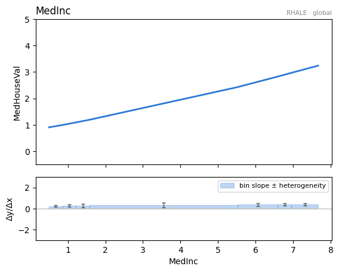
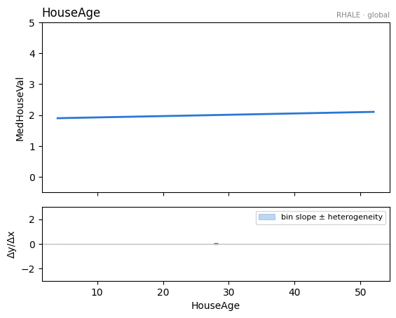
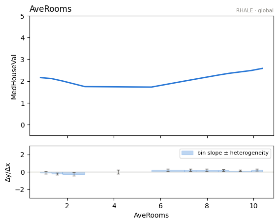
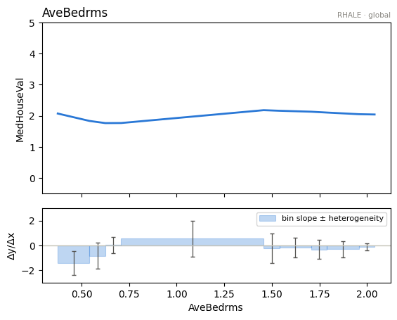
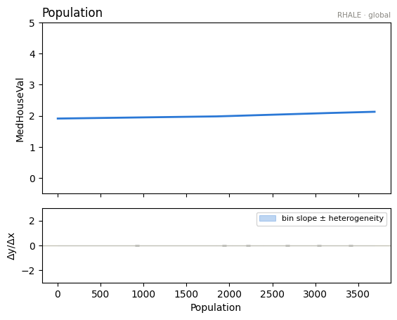
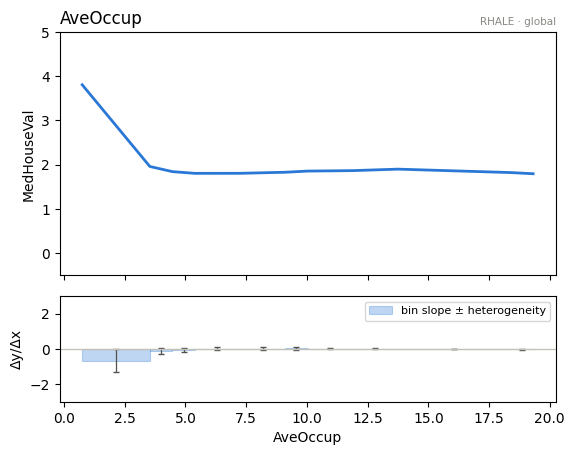
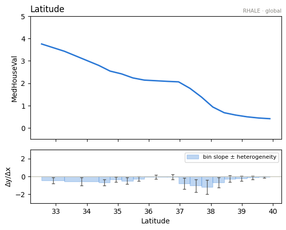
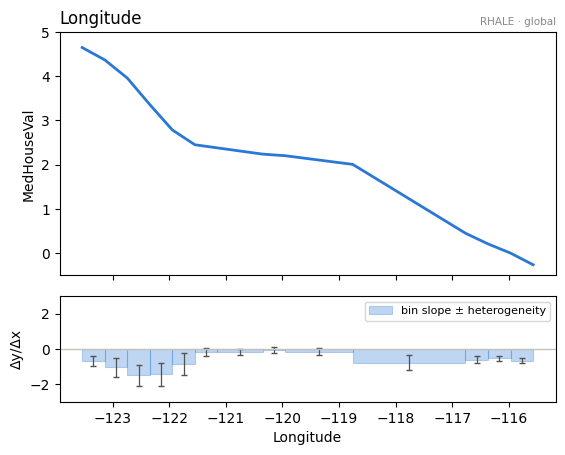
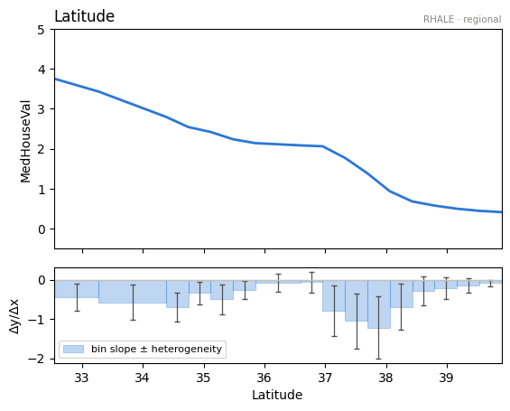
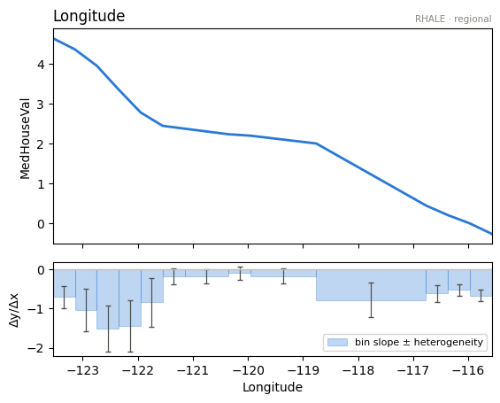

<!DOCTYPE html><html lang="en" class="no-js"><head>
    
      <meta charset="utf-8">
      <meta name="viewport" content="width=device-width,initial-scale=1">
      
      
      
      
      
      
        
      
      
      <link rel="icon" href="../../../static/effector_favicon.png">
      <meta name="generator" content="mkdocs-1.6.1, mkdocs-material-9.7.6">
    
    
      
        <title>California Housing - effector</title>
      
    
    
      <link rel="stylesheet" href="../../../assets/stylesheets/main.484c7ddc.min.css">
      
        
        <link rel="stylesheet" href="../../../assets/stylesheets/palette.ab4e12ef.min.css">
      
      


    
    
      
    
    
      
        
        
        <link rel="preconnect" href="https://fonts.gstatic.com" crossorigin="">
        <link rel="stylesheet" href="https://fonts.googleapis.com/css?family=Roboto+Flex:300,300i,400,400i,700,700i%7CRoboto+Mono:400,400i,700,700i&amp;display=fallback">
        <style>:root{--md-text-font:"Roboto Flex";--md-code-font:"Roboto Mono"}</style>
      
    
    
      <link rel="stylesheet" href="../../../assets/_mkdocstrings.css">
    
    <script>__md_scope=new URL("../../..",location),__md_hash=e=>[...e].reduce(((e,_)=>(e<<5)-e+_.charCodeAt(0)),0),__md_get=(e,_=localStorage,t=__md_scope)=>JSON.parse(_.getItem(t.pathname+"."+e)),__md_set=(e,_,t=localStorage,a=__md_scope)=>{try{t.setItem(a.pathname+"."+e,JSON.stringify(_))}catch(e){}}</script>
    
      

    
    
  <link href="../../../assets/stylesheets/glightbox.min.css" rel="stylesheet"><script src="../../../assets/javascripts/glightbox.min.js"></script><style id="glightbox-style">
            html.glightbox-open { overflow: initial; height: 100%; }
            .gslide-title { margin-top: 0px; user-select: text; }
            .gslide-desc { color: #666; user-select: text; }
            .gslide-image img { background: white; }
            .gscrollbar-fixer { padding-right: 15px; }
            .gdesc-inner { font-size: 0.75rem; }
            body[data-md-color-scheme="slate"] .gdesc-inner { background: var(--md-default-bg-color); }
            body[data-md-color-scheme="slate"] .gslide-title { color: var(--md-default-fg-color); }
            body[data-md-color-scheme="slate"] .gslide-desc { color: var(--md-default-fg-color); }
        </style></head>
  
  
    
    
      
    
    
    
    
    <body dir="ltr" data-md-color-scheme="default" data-md-color-primary="indigo" data-md-color-accent="indigo">
  
    
    <input class="md-toggle" data-md-toggle="drawer" type="checkbox" id="__drawer" autocomplete="off">
    <input class="md-toggle" data-md-toggle="search" type="checkbox" id="__search" autocomplete="off">
    <label class="md-overlay" for="__drawer"></label>
    <div data-md-component="skip">
      
        
        <a href="#california-housing" class="md-skip">
          Skip to content
        </a>
      
    </div>
    <div data-md-component="announce">
      
    </div>
    
    
      

  

<header class="md-header md-header--shadow" data-md-component="header">
  <nav class="md-header__inner md-grid" aria-label="Header">
    <a href="../../.." title="effector" class="md-header__button md-logo" aria-label="effector" data-md-component="logo">
      
  

    </a>
    <label class="md-header__button md-icon" for="__drawer">
      
      <svg xmlns="http://www.w3.org/2000/svg" viewBox="0 0 24 24"><path d="M3 6h18v2H3zm0 5h18v2H3zm0 5h18v2H3z"></path></svg>
    </label>
    <div class="md-header__title" data-md-component="header-title">
      <div class="md-header__ellipsis">
        <div class="md-header__topic">
          <span class="md-ellipsis">
            effector
          </span>
        </div>
        <div class="md-header__topic" data-md-component="header-topic">
          <span class="md-ellipsis">
            
              California Housing
            
          </span>
        </div>
      </div>
    </div>
    
      
        <form class="md-header__option" data-md-component="palette">
  
    
    
    
    <input class="md-option" data-md-color-media="(prefers-color-scheme)" data-md-color-scheme="default" data-md-color-primary="indigo" data-md-color-accent="indigo" aria-label="Switch to light mode" type="radio" name="__palette" id="__palette_0">
    
      <label class="md-header__button md-icon" title="Switch to light mode" for="__palette_1" hidden="">
        <svg xmlns="http://www.w3.org/2000/svg" viewBox="0 0 24 24"><path d="m14.3 16-.7-2h-3.2l-.7 2H7.8L11 7h2l3.2 9zM20 8.69V4h-4.69L12 .69 8.69 4H4v4.69L.69 12 4 15.31V20h4.69L12 23.31 15.31 20H20v-4.69L23.31 12zm-9.15 3.96h2.3L12 9z"></path></svg>
      </label>
    
  
    
    
    
    <input class="md-option" data-md-color-media="(prefers-color-scheme: light)" data-md-color-scheme="default" data-md-color-primary="indigo" data-md-color-accent="indigo" aria-label="Switch to dark mode" type="radio" name="__palette" id="__palette_1">
    
      <label class="md-header__button md-icon" title="Switch to dark mode" for="__palette_2" hidden="">
        <svg xmlns="http://www.w3.org/2000/svg" viewBox="0 0 24 24"><path d="M12 8a4 4 0 0 0-4 4 4 4 0 0 0 4 4 4 4 0 0 0 4-4 4 4 0 0 0-4-4m0 10a6 6 0 0 1-6-6 6 6 0 0 1 6-6 6 6 0 0 1 6 6 6 6 0 0 1-6 6m8-9.31V4h-4.69L12 .69 8.69 4H4v4.69L.69 12 4 15.31V20h4.69L12 23.31 15.31 20H20v-4.69L23.31 12z"></path></svg>
      </label>
    
  
    
    
    
    <input class="md-option" data-md-color-media="(prefers-color-scheme: dark)" data-md-color-scheme="slate" data-md-color-primary="indigo" data-md-color-accent="indigo" aria-label="Switch to system preference" type="radio" name="__palette" id="__palette_2">
    
      <label class="md-header__button md-icon" title="Switch to system preference" for="__palette_0" hidden="">
        <svg xmlns="http://www.w3.org/2000/svg" viewBox="0 0 24 24"><path d="M12 18c-.89 0-1.74-.2-2.5-.55C11.56 16.5 13 14.42 13 12s-1.44-4.5-3.5-5.45C10.26 6.2 11.11 6 12 6a6 6 0 0 1 6 6 6 6 0 0 1-6 6m8-9.31V4h-4.69L12 .69 8.69 4H4v4.69L.69 12 4 15.31V20h4.69L12 23.31 15.31 20H20v-4.69L23.31 12z"></path></svg>
      </label>
    
  
</form>
      
    
    
      <script>var palette=__md_get("__palette");if(palette&&palette.color){if("(prefers-color-scheme)"===palette.color.media){var media=matchMedia("(prefers-color-scheme: light)"),input=document.querySelector(media.matches?"[data-md-color-media='(prefers-color-scheme: light)']":"[data-md-color-media='(prefers-color-scheme: dark)']");palette.color.media=input.getAttribute("data-md-color-media"),palette.color.scheme=input.getAttribute("data-md-color-scheme"),palette.color.primary=input.getAttribute("data-md-color-primary"),palette.color.accent=input.getAttribute("data-md-color-accent")}for(var[key,value]of Object.entries(palette.color))document.body.setAttribute("data-md-color-"+key,value)}</script>
    
    
    
      
      
        <label class="md-header__button md-icon" for="__search">
          
          <svg xmlns="http://www.w3.org/2000/svg" viewBox="0 0 24 24"><path d="M9.5 3A6.5 6.5 0 0 1 16 9.5c0 1.61-.59 3.09-1.56 4.23l.27.27h.79l5 5-1.5 1.5-5-5v-.79l-.27-.27A6.52 6.52 0 0 1 9.5 16 6.5 6.5 0 0 1 3 9.5 6.5 6.5 0 0 1 9.5 3m0 2C7 5 5 7 5 9.5S7 14 9.5 14 14 12 14 9.5 12 5 9.5 5"></path></svg>
        </label>
        <div class="md-search" data-md-component="search" role="dialog">
  <label class="md-search__overlay" for="__search"></label>
  <div class="md-search__inner" role="search">
    <form class="md-search__form" name="search">
      <input type="text" class="md-search__input" name="query" aria-label="Search" placeholder="Search" autocapitalize="off" autocorrect="off" autocomplete="off" spellcheck="false" data-md-component="search-query" required="">
      <label class="md-search__icon md-icon" for="__search">
        
        <svg xmlns="http://www.w3.org/2000/svg" viewBox="0 0 24 24"><path d="M9.5 3A6.5 6.5 0 0 1 16 9.5c0 1.61-.59 3.09-1.56 4.23l.27.27h.79l5 5-1.5 1.5-5-5v-.79l-.27-.27A6.52 6.52 0 0 1 9.5 16 6.5 6.5 0 0 1 3 9.5 6.5 6.5 0 0 1 9.5 3m0 2C7 5 5 7 5 9.5S7 14 9.5 14 14 12 14 9.5 12 5 9.5 5"></path></svg>
        
        <svg xmlns="http://www.w3.org/2000/svg" viewBox="0 0 24 24"><path d="M20 11v2H8l5.5 5.5-1.42 1.42L4.16 12l7.92-7.92L13.5 5.5 8 11z"></path></svg>
      </label>
      <nav class="md-search__options" aria-label="Search">
        
        <button type="reset" class="md-search__icon md-icon" title="Clear" aria-label="Clear" tabindex="-1">
          
          <svg xmlns="http://www.w3.org/2000/svg" viewBox="0 0 24 24"><path d="M19 6.41 17.59 5 12 10.59 6.41 5 5 6.41 10.59 12 5 17.59 6.41 19 12 13.41 17.59 19 19 17.59 13.41 12z"></path></svg>
        </button>
      </nav>
      
    </form>
    <div class="md-search__output">
      <div class="md-search__scrollwrap" tabindex="0" data-md-scrollfix="">
        <div class="md-search-result" data-md-component="search-result">
          <div class="md-search-result__meta">
            Initializing search
          </div>
          <ol class="md-search-result__list" role="presentation"></ol>
        </div>
      </div>
    </div>
  </div>
</div>
      
    
    
  </nav>
  
</header>
    
    <div class="md-container" data-md-component="container">
      
      
        
          
        
      
      <main class="md-main" data-md-component="main">
        <div class="md-main__inner md-grid">
          
            
              
              <div class="md-sidebar md-sidebar--primary" data-md-component="sidebar" data-md-type="navigation">
                <div class="md-sidebar__scrollwrap">
                  <div class="md-sidebar__inner">
                    


<nav class="md-nav md-nav--primary" aria-label="Navigation" data-md-level="0">
  <label class="md-nav__title" for="__drawer">
    <a href="../../.." title="effector" class="md-nav__button md-logo" aria-label="effector" data-md-component="logo">
      
  

    </a>
    effector
  </label>
  
  <ul class="md-nav__list" data-md-scrollfix="">
    
      
      
  
  
  
  
    <li class="md-nav__item">
      <a href="../../.." class="md-nav__link">
        
  
  
  <span class="md-ellipsis">
    
  
    effector
  

    
  </span>
  
  

      </a>
    </li>
  

    
      
      
  
  
  
  
    <li class="md-nav__item">
      <a href="../../../guides/" class="md-nav__link">
        
  
  
  <span class="md-ellipsis">
    
  
    Guides
  

    
  </span>
  
  

      </a>
    </li>
  

    
      
      
  
  
  
  
    <li class="md-nav__item">
      <a href="../../../examples/" class="md-nav__link">
        
  
  
  <span class="md-ellipsis">
    
  
    Examples
  

    
  </span>
  
  

      </a>
    </li>
  

    
      
      
  
  
  
  
    <li class="md-nav__item">
      <a href="../../../api_docs/" class="md-nav__link">
        
  
  
  <span class="md-ellipsis">
    
  
    API Docs
  

    
  </span>
  
  

      </a>
    </li>
  

    
      
      
  
  
  
  
    <li class="md-nav__item">
      <a href="../../../contributing/" class="md-nav__link">
        
  
  
  <span class="md-ellipsis">
    
  
    Contributing
  

    
  </span>
  
  

      </a>
    </li>
  

    
      
      
  
  
  
  
    <li class="md-nav__item">
      <a href="../../../changelog/" class="md-nav__link">
        
  
  
  <span class="md-ellipsis">
    
  
    Changelog
  

    
  </span>
  
  

      </a>
    </li>
  

    
  </ul>
</nav>
                  </div>
                </div>
              </div>
            
            
              
              <div class="md-sidebar md-sidebar--secondary" data-md-component="sidebar" data-md-type="toc">
                <div class="md-sidebar__scrollwrap">
                  <div class="md-sidebar__inner">
                    

<nav class="md-nav md-nav--secondary" aria-label="Table of contents">
  
  
  
    
  
  
    <label class="md-nav__title" for="__toc">
      <span class="md-nav__icon md-icon"></span>
      Table of contents
    </label>
    <ul class="md-nav__list" data-md-component="toc" data-md-scrollfix="">
      
        <li class="md-nav__item">
  <a href="#global-effects" class="md-nav__link">
    <span class="md-ellipsis">
      
        Global effects
      
    </span>
  </a>
  
    <nav class="md-nav" aria-label="Global effects">
      <ul class="md-nav__list">
        
          <li class="md-nav__item">
  <a href="#importance-one-click-report" class="md-nav__link">
    <span class="md-ellipsis">
      
        Importance &amp; one-click report
      
    </span>
  </a>
  
</li>
        
      </ul>
    </nav>
  
</li>
      
        <li class="md-nav__item">
  <a href="#regional-effects" class="md-nav__link">
    <span class="md-ellipsis">
      
        Regional Effects
      
    </span>
  </a>
  
</li>
      
        <li class="md-nav__item">
  <a href="#latitude-south-to-north" class="md-nav__link">
    <span class="md-ellipsis">
      
        Latitude (south to north)
      
    </span>
  </a>
  
</li>
      
        <li class="md-nav__item">
  <a href="#longitude-west-to-east" class="md-nav__link">
    <span class="md-ellipsis">
      
        Longitude (west to east)
      
    </span>
  </a>
  
</li>
      
        <li class="md-nav__item">
  <a href="#cross-method-sanity-check" class="md-nav__link">
    <span class="md-ellipsis">
      
        Cross-method sanity check
      
    </span>
  </a>
  
</li>
      
    </ul>
  
</nav>
                  </div>
                </div>
              </div>
            
          
          
            <div class="md-content" data-md-component="content">
              
              <article class="md-content__inner md-typeset">
                
                  


<h1 id="california-housing">California Housing</h1>
<ul>
<li>Author: <a href="https://givasile.github.io/">givasile</a></li>
<li>Runtime: ~35 s</li>
<li>Description: Global and regional RHALE effects on the California-housing
  dataset, explaining a neural network's predicted house values — with
  regional splits on income, latitude and longitude.</li>
<li>📄 The whole notebook in one page: <a href="https://xai-effector.github.io/static/reports/02_california_housing_rhale.html">RHALE report</a></li>
</ul>
<div class="highlight"><pre><span></span><code><span class="kn">import</span><span class="w"> </span><span class="nn">numpy</span><span class="w"> </span><span class="k">as</span><span class="w"> </span><span class="nn">np</span>
<span class="kn">import</span><span class="w"> </span><span class="nn">keras</span>
<span class="kn">import</span><span class="w"> </span><span class="nn">tensorflow</span><span class="w"> </span><span class="k">as</span><span class="w"> </span><span class="nn">tf</span>
<span class="kn">import</span><span class="w"> </span><span class="nn">effector</span>
<span class="kn">from</span><span class="w"> </span><span class="nn">sklearn.datasets</span><span class="w"> </span><span class="kn">import</span> <span class="n">fetch_california_housing</span>

<span class="n">california_housing</span> <span class="o">=</span> <span class="n">fetch_california_housing</span><span class="p">(</span><span class="n">as_frame</span><span class="o">=</span><span class="kc">True</span><span class="p">)</span>
</code></pre></div>
<pre><code>WARNING: All log messages before absl::InitializeLog() is called are written to STDERR
I0000 00:00:1784066550.180750   22311 cpu_feature_guard.cc:227] This TensorFlow binary is optimized to use available CPU instructions in performance-critical operations.
To enable the following instructions: AVX2 FMA, in other operations, rebuild TensorFlow with the appropriate compiler flags.
</code></pre>
<div class="highlight"><pre><span></span><code><span class="n">np</span><span class="o">.</span><span class="n">random</span><span class="o">.</span><span class="n">seed</span><span class="p">(</span><span class="mi">21</span><span class="p">)</span>
</code></pre></div>
<div class="highlight"><pre><span></span><code><span class="nb">print</span><span class="p">(</span><span class="n">california_housing</span><span class="o">.</span><span class="n">DESCR</span><span class="p">)</span>
</code></pre></div>
<pre><code>.. _california_housing_dataset:

California Housing dataset
--------------------------

**Data Set Characteristics:**

:Number of Instances: 20640

:Number of Attributes: 8 numeric, predictive attributes and the target

:Attribute Information:
    - MedInc        median income in block group
    - HouseAge      median house age in block group
    - AveRooms      average number of rooms per household
    - AveBedrms     average number of bedrooms per household
    - Population    block group population
    - AveOccup      average number of household members
    - Latitude      block group latitude
    - Longitude     block group longitude

:Missing Attribute Values: None

This dataset was obtained from the StatLib repository.
https://www.dcc.fc.up.pt/~ltorgo/Regression/cal_housing.html

The target variable is the median house value for California districts,
expressed in hundreds of thousands of dollars ($100,000).

This dataset was derived from the 1990 U.S. census, using one row per census
block group. A block group is the smallest geographical unit for which the U.S.
Census Bureau publishes sample data (a block group typically has a population
of 600 to 3,000 people).

A household is a group of people residing within a home. Since the average
number of rooms and bedrooms in this dataset are provided per household, these
columns may take surprisingly large values for block groups with few households
and many empty houses, such as vacation resorts.

It can be downloaded/loaded using the
:func:`sklearn.datasets.fetch_california_housing` function.

.. rubric:: References

- Pace, R. Kelley and Ronald Barry, Sparse Spatial Autoregressions,
  Statistics and Probability Letters, 33:291-297, 1997.
</code></pre>
<div class="highlight"><pre><span></span><code><span class="n">feature_names</span> <span class="o">=</span> <span class="n">california_housing</span><span class="o">.</span><span class="n">feature_names</span>
<span class="n">target_name</span><span class="o">=</span> <span class="n">california_housing</span><span class="o">.</span><span class="n">target_names</span><span class="p">[</span><span class="mi">0</span><span class="p">]</span>
<span class="n">df</span> <span class="o">=</span> <span class="nb">type</span><span class="p">(</span><span class="n">california_housing</span><span class="o">.</span><span class="n">frame</span><span class="p">)</span>
</code></pre></div>
<div class="highlight"><pre><span></span><code><span class="n">X</span> <span class="o">=</span> <span class="n">california_housing</span><span class="o">.</span><span class="n">data</span>
<span class="n">y</span> <span class="o">=</span> <span class="n">california_housing</span><span class="o">.</span><span class="n">target</span>
</code></pre></div>
<div class="highlight"><pre><span></span><code><span class="nb">print</span><span class="p">(</span><span class="s2">"Design matrix shape: </span><span class="si">{}</span><span class="s2">"</span><span class="o">.</span><span class="n">format</span><span class="p">(</span><span class="n">X</span><span class="o">.</span><span class="n">shape</span><span class="p">))</span>
<span class="nb">print</span><span class="p">(</span><span class="s2">"---------------------------------"</span><span class="p">)</span>
<span class="k">for</span> <span class="n">col_name</span> <span class="ow">in</span> <span class="n">X</span><span class="o">.</span><span class="n">columns</span><span class="p">:</span>
    <span class="nb">print</span><span class="p">(</span><span class="s2">"Feature: </span><span class="si">{:15}</span><span class="s2">, unique: </span><span class="si">{:4d}</span><span class="s2">, Mean: </span><span class="si">{:6.2f}</span><span class="s2">, Std: </span><span class="si">{:6.2f}</span><span class="s2">, Min: </span><span class="si">{:6.2f}</span><span class="s2">, Max: </span><span class="si">{:6.2f}</span><span class="s2">"</span><span class="o">.</span><span class="n">format</span><span class="p">(</span><span class="n">col_name</span><span class="p">,</span> <span class="nb">len</span><span class="p">(</span><span class="n">X</span><span class="p">[</span><span class="n">col_name</span><span class="p">]</span><span class="o">.</span><span class="n">unique</span><span class="p">()),</span> <span class="n">X</span><span class="p">[</span><span class="n">col_name</span><span class="p">]</span><span class="o">.</span><span class="n">mean</span><span class="p">(),</span> <span class="n">X</span><span class="p">[</span><span class="n">col_name</span><span class="p">]</span><span class="o">.</span><span class="n">std</span><span class="p">(),</span> <span class="n">X</span><span class="p">[</span><span class="n">col_name</span><span class="p">]</span><span class="o">.</span><span class="n">min</span><span class="p">(),</span> <span class="n">X</span><span class="p">[</span><span class="n">col_name</span><span class="p">]</span><span class="o">.</span><span class="n">max</span><span class="p">()))</span>

<span class="nb">print</span><span class="p">(</span><span class="s2">"</span><span class="se">\n</span><span class="s2">Target shape: </span><span class="si">{}</span><span class="s2">"</span><span class="o">.</span><span class="n">format</span><span class="p">(</span><span class="n">y</span><span class="o">.</span><span class="n">shape</span><span class="p">))</span>
<span class="nb">print</span><span class="p">(</span><span class="s2">"---------------------------------"</span><span class="p">)</span>
<span class="nb">print</span><span class="p">(</span><span class="s2">"Target: </span><span class="si">{:15}</span><span class="s2">, unique: </span><span class="si">{:4d}</span><span class="s2">, Mean: </span><span class="si">{:6.2f}</span><span class="s2">, Std: </span><span class="si">{:6.2f}</span><span class="s2">, Min: </span><span class="si">{:6.2f}</span><span class="s2">, Max: </span><span class="si">{:6.2f}</span><span class="s2">"</span><span class="o">.</span><span class="n">format</span><span class="p">(</span><span class="n">y</span><span class="o">.</span><span class="n">name</span><span class="p">,</span> <span class="nb">len</span><span class="p">(</span><span class="n">y</span><span class="o">.</span><span class="n">unique</span><span class="p">()),</span> <span class="n">y</span><span class="o">.</span><span class="n">mean</span><span class="p">(),</span> <span class="n">y</span><span class="o">.</span><span class="n">std</span><span class="p">(),</span> <span class="n">y</span><span class="o">.</span><span class="n">min</span><span class="p">(),</span> <span class="n">y</span><span class="o">.</span><span class="n">max</span><span class="p">()))</span>
</code></pre></div>
<pre><code>Design matrix shape: (20640, 8)
---------------------------------
Feature: MedInc         , unique: 12928, Mean:   3.87, Std:   1.90, Min:   0.50, Max:  15.00
Feature: HouseAge       , unique:   52, Mean:  28.64, Std:  12.59, Min:   1.00, Max:  52.00
Feature: AveRooms       , unique: 19392, Mean:   5.43, Std:   2.47, Min:   0.85, Max: 141.91
Feature: AveBedrms      , unique: 14233, Mean:   1.10, Std:   0.47, Min:   0.33, Max:  34.07
Feature: Population     , unique: 3888, Mean: 1425.48, Std: 1132.46, Min:   3.00, Max: 35682.00
Feature: AveOccup       , unique: 18841, Mean:   3.07, Std:  10.39, Min:   0.69, Max: 1243.33
Feature: Latitude       , unique:  862, Mean:  35.63, Std:   2.14, Min:  32.54, Max:  41.95
Feature: Longitude      , unique:  844, Mean: -119.57, Std:   2.00, Min: -124.35, Max: -114.31

Target shape: (20640,)
---------------------------------
Target: MedHouseVal    , unique: 3842, Mean:   2.07, Std:   1.15, Min:   0.15, Max:   5.00
</code></pre>
<div class="highlight"><pre><span></span><code><span class="k">def</span><span class="w"> </span><span class="nf">preprocess</span><span class="p">(</span><span class="n">X</span><span class="p">,</span> <span class="n">y</span><span class="p">):</span>
    <span class="c1"># Compute mean and std for outlier detection</span>
    <span class="n">X_mean</span> <span class="o">=</span> <span class="n">X</span><span class="o">.</span><span class="n">mean</span><span class="p">()</span>
    <span class="n">X_std</span> <span class="o">=</span> <span class="n">X</span><span class="o">.</span><span class="n">std</span><span class="p">()</span>

    <span class="c1"># Exclude instances with any feature 2 std away from the mean</span>
    <span class="n">mask</span> <span class="o">=</span> <span class="p">(</span><span class="n">X</span> <span class="o">-</span> <span class="n">X_mean</span><span class="p">)</span><span class="o">.</span><span class="n">abs</span><span class="p">()</span> <span class="o">&lt;=</span> <span class="mi">2</span> <span class="o">*</span> <span class="n">X_std</span>
    <span class="n">mask</span> <span class="o">=</span> <span class="n">mask</span><span class="o">.</span><span class="n">all</span><span class="p">(</span><span class="n">axis</span><span class="o">=</span><span class="mi">1</span><span class="p">)</span>

    <span class="n">X_filtered</span> <span class="o">=</span> <span class="n">X</span><span class="p">[</span><span class="n">mask</span><span class="p">]</span>
    <span class="n">y_filtered</span> <span class="o">=</span> <span class="n">y</span><span class="p">[</span><span class="n">mask</span><span class="p">]</span>

    <span class="c1"># Standardize X</span>
    <span class="n">X_mean</span> <span class="o">=</span> <span class="n">X_filtered</span><span class="o">.</span><span class="n">mean</span><span class="p">()</span>
    <span class="n">X_std</span> <span class="o">=</span> <span class="n">X_filtered</span><span class="o">.</span><span class="n">std</span><span class="p">()</span>
    <span class="n">X_standardized</span> <span class="o">=</span> <span class="p">(</span><span class="n">X_filtered</span> <span class="o">-</span> <span class="n">X_mean</span><span class="p">)</span> <span class="o">/</span> <span class="n">X_std</span>

    <span class="c1"># Standardize y</span>
    <span class="n">y_mean</span> <span class="o">=</span> <span class="n">y_filtered</span><span class="o">.</span><span class="n">mean</span><span class="p">()</span>
    <span class="n">y_std</span> <span class="o">=</span> <span class="n">y_filtered</span><span class="o">.</span><span class="n">std</span><span class="p">()</span>
    <span class="n">y_standardized</span> <span class="o">=</span> <span class="p">(</span><span class="n">y_filtered</span> <span class="o">-</span> <span class="n">y_mean</span><span class="p">)</span> <span class="o">/</span> <span class="n">y_std</span>

    <span class="k">return</span> <span class="n">X_standardized</span><span class="p">,</span> <span class="n">y_standardized</span><span class="p">,</span> <span class="n">X_mean</span><span class="p">,</span> <span class="n">X_std</span><span class="p">,</span> <span class="n">y_mean</span><span class="p">,</span> <span class="n">y_std</span>


<span class="c1"># shuffle and standarize all features</span>
<span class="n">X_df</span><span class="p">,</span> <span class="n">Y_df</span><span class="p">,</span> <span class="n">x_mean</span><span class="p">,</span> <span class="n">x_std</span><span class="p">,</span> <span class="n">y_mean</span><span class="p">,</span> <span class="n">y_std</span> <span class="o">=</span> <span class="n">preprocess</span><span class="p">(</span><span class="n">X</span><span class="p">,</span> <span class="n">y</span><span class="p">)</span>
</code></pre></div>
<div class="highlight"><pre><span></span><code><span class="k">def</span><span class="w"> </span><span class="nf">split</span><span class="p">(</span><span class="n">X_df</span><span class="p">,</span> <span class="n">Y_df</span><span class="p">):</span>
    <span class="c1"># shuffle indices</span>
    <span class="n">indices</span> <span class="o">=</span> <span class="n">np</span><span class="o">.</span><span class="n">arange</span><span class="p">(</span><span class="nb">len</span><span class="p">(</span><span class="n">X_df</span><span class="p">))</span>
    <span class="n">np</span><span class="o">.</span><span class="n">random</span><span class="o">.</span><span class="n">shuffle</span><span class="p">(</span><span class="n">indices</span><span class="p">)</span>

    <span class="c1"># data split</span>
    <span class="n">train_size</span> <span class="o">=</span> <span class="nb">int</span><span class="p">(</span><span class="mf">0.8</span> <span class="o">*</span> <span class="nb">len</span><span class="p">(</span><span class="n">X_df</span><span class="p">))</span>

    <span class="n">X_train</span> <span class="o">=</span> <span class="n">X_df</span><span class="o">.</span><span class="n">iloc</span><span class="p">[</span><span class="n">indices</span><span class="p">[:</span><span class="n">train_size</span><span class="p">]]</span>
    <span class="n">Y_train</span> <span class="o">=</span> <span class="n">Y_df</span><span class="o">.</span><span class="n">iloc</span><span class="p">[</span><span class="n">indices</span><span class="p">[:</span><span class="n">train_size</span><span class="p">]]</span>
    <span class="n">X_test</span> <span class="o">=</span> <span class="n">X_df</span><span class="o">.</span><span class="n">iloc</span><span class="p">[</span><span class="n">indices</span><span class="p">[</span><span class="n">train_size</span><span class="p">:]]</span>
    <span class="n">Y_test</span> <span class="o">=</span> <span class="n">Y_df</span><span class="o">.</span><span class="n">iloc</span><span class="p">[</span><span class="n">indices</span><span class="p">[</span><span class="n">train_size</span><span class="p">:]]</span>

    <span class="k">return</span> <span class="n">X_train</span><span class="p">,</span> <span class="n">Y_train</span><span class="p">,</span> <span class="n">X_test</span><span class="p">,</span> <span class="n">Y_test</span>

<span class="c1"># train/test split</span>
<span class="n">X_train</span><span class="p">,</span> <span class="n">Y_train</span><span class="p">,</span> <span class="n">X_test</span><span class="p">,</span> <span class="n">Y_test</span> <span class="o">=</span> <span class="n">split</span><span class="p">(</span><span class="n">X_df</span><span class="p">,</span> <span class="n">Y_df</span><span class="p">)</span>
</code></pre></div>
<div class="highlight"><pre><span></span><code><span class="c1"># Train - Evaluate - Explain a neural network</span>
<span class="n">model</span> <span class="o">=</span> <span class="n">keras</span><span class="o">.</span><span class="n">Sequential</span><span class="p">([</span>
    <span class="n">keras</span><span class="o">.</span><span class="n">layers</span><span class="o">.</span><span class="n">Dense</span><span class="p">(</span><span class="mi">1024</span><span class="p">,</span> <span class="n">activation</span><span class="o">=</span><span class="s2">"relu"</span><span class="p">),</span>
    <span class="n">keras</span><span class="o">.</span><span class="n">layers</span><span class="o">.</span><span class="n">Dense</span><span class="p">(</span><span class="mi">512</span><span class="p">,</span> <span class="n">activation</span><span class="o">=</span><span class="s2">"relu"</span><span class="p">),</span>
    <span class="n">keras</span><span class="o">.</span><span class="n">layers</span><span class="o">.</span><span class="n">Dense</span><span class="p">(</span><span class="mi">256</span><span class="p">,</span> <span class="n">activation</span><span class="o">=</span><span class="s2">"relu"</span><span class="p">),</span>
    <span class="n">keras</span><span class="o">.</span><span class="n">layers</span><span class="o">.</span><span class="n">Dense</span><span class="p">(</span><span class="mi">1</span><span class="p">)</span>
<span class="p">])</span>

<span class="n">optimizer</span> <span class="o">=</span> <span class="n">keras</span><span class="o">.</span><span class="n">optimizers</span><span class="o">.</span><span class="n">Adam</span><span class="p">(</span><span class="n">learning_rate</span><span class="o">=</span><span class="mf">0.001</span><span class="p">)</span>
<span class="n">model</span><span class="o">.</span><span class="n">compile</span><span class="p">(</span><span class="n">optimizer</span><span class="o">=</span><span class="n">optimizer</span><span class="p">,</span> <span class="n">loss</span><span class="o">=</span><span class="s2">"mse"</span><span class="p">,</span> <span class="n">metrics</span><span class="o">=</span><span class="p">[</span><span class="s2">"mae"</span><span class="p">,</span> <span class="n">keras</span><span class="o">.</span><span class="n">metrics</span><span class="o">.</span><span class="n">RootMeanSquaredError</span><span class="p">()])</span>
<span class="n">model</span><span class="o">.</span><span class="n">fit</span><span class="p">(</span><span class="n">X_train</span><span class="p">,</span> <span class="n">Y_train</span><span class="p">,</span> <span class="n">batch_size</span><span class="o">=</span><span class="mi">1024</span><span class="p">,</span> <span class="n">epochs</span><span class="o">=</span><span class="mi">20</span><span class="p">,</span> <span class="n">verbose</span><span class="o">=</span><span class="mi">1</span><span class="p">)</span>
<span class="n">model</span><span class="o">.</span><span class="n">evaluate</span><span class="p">(</span><span class="n">X_train</span><span class="p">,</span> <span class="n">Y_train</span><span class="p">,</span> <span class="n">verbose</span><span class="o">=</span><span class="mi">1</span><span class="p">)</span>
<span class="n">model</span><span class="o">.</span><span class="n">evaluate</span><span class="p">(</span><span class="n">X_test</span><span class="p">,</span> <span class="n">Y_test</span><span class="p">,</span> <span class="n">verbose</span><span class="o">=</span><span class="mi">1</span><span class="p">)</span>
</code></pre></div>
<pre><code>Epoch 1/20
</code></pre>
<p> 1/15 ━━━━━━━━━━━━━━━━━━━━ 13s 979ms/step - loss: 0.9679 - mae: 0.7580 - root_mean_squared_error: 0.9838</p>
<pre><code>
</code></pre>
<p> 4/15 ━━━━━━━━━━━━━━━━━━━━ 0s 22ms/step - loss: 0.8043 - mae: 0.6834 - root_mean_squared_error: 0.8948  </p>
<pre><code>
</code></pre>
<p> 7/15 ━━━━━━━━━━━━━━━━━━━━ 0s 21ms/step - loss: 0.7198 - mae: 0.6399 - root_mean_squared_error: 0.8452</p>
<pre><code>
</code></pre>
<p>10/15 ━━━━━━━━━━━━━━━━━━━━ 0s 21ms/step - loss: 0.6626 - mae: 0.6097 - root_mean_squared_error: 0.8098</p>
<pre><code>
</code></pre>
<p>13/15 ━━━━━━━━━━━━━━━━━━━━ 0s 21ms/step - loss: 0.6211 - mae: 0.5868 - root_mean_squared_error: 0.7833</p>
<pre><code>
</code></pre>
<p>15/15 ━━━━━━━━━━━━━━━━━━━━ 1s 22ms/step - loss: 0.4590 - mae: 0.4957 - root_mean_squared_error: 0.6775</p>
<pre><code>Epoch 2/20
</code></pre>
<p> 1/15 ━━━━━━━━━━━━━━━━━━━━ 0s 42ms/step - loss: 0.3745 - mae: 0.4383 - root_mean_squared_error: 0.6120</p>
<pre><code>
</code></pre>
<p> 4/15 ━━━━━━━━━━━━━━━━━━━━ 0s 22ms/step - loss: 0.3426 - mae: 0.4206 - root_mean_squared_error: 0.5851</p>
<pre><code>
</code></pre>
<p> 7/15 ━━━━━━━━━━━━━━━━━━━━ 0s 22ms/step - loss: 0.3366 - mae: 0.4184 - root_mean_squared_error: 0.5800</p>
<pre><code>
</code></pre>
<p>10/15 ━━━━━━━━━━━━━━━━━━━━ 0s 23ms/step - loss: 0.3341 - mae: 0.4171 - root_mean_squared_error: 0.5779</p>
<pre><code>
</code></pre>
<p>13/15 ━━━━━━━━━━━━━━━━━━━━ 0s 23ms/step - loss: 0.3310 - mae: 0.4149 - root_mean_squared_error: 0.5752</p>
<pre><code>
</code></pre>
<p>15/15 ━━━━━━━━━━━━━━━━━━━━ 0s 24ms/step - loss: 0.3183 - mae: 0.4051 - root_mean_squared_error: 0.5642</p>
<pre><code>Epoch 3/20
</code></pre>
<p> 1/15 ━━━━━━━━━━━━━━━━━━━━ 0s 51ms/step - loss: 0.2825 - mae: 0.3806 - root_mean_squared_error: 0.5315</p>
<pre><code>
</code></pre>
<p> 3/15 ━━━━━━━━━━━━━━━━━━━━ 0s 27ms/step - loss: 0.2885 - mae: 0.3859 - root_mean_squared_error: 0.5371</p>
<pre><code>
</code></pre>
<p> 6/15 ━━━━━━━━━━━━━━━━━━━━ 0s 26ms/step - loss: 0.2940 - mae: 0.3871 - root_mean_squared_error: 0.5422</p>
<pre><code>
</code></pre>
<p> 9/15 ━━━━━━━━━━━━━━━━━━━━ 0s 25ms/step - loss: 0.2939 - mae: 0.3865 - root_mean_squared_error: 0.5421</p>
<pre><code>
</code></pre>
<p>11/15 ━━━━━━━━━━━━━━━━━━━━ 0s 26ms/step - loss: 0.2941 - mae: 0.3862 - root_mean_squared_error: 0.5423</p>
<pre><code>
</code></pre>
<p>13/15 ━━━━━━━━━━━━━━━━━━━━ 0s 26ms/step - loss: 0.2943 - mae: 0.3863 - root_mean_squared_error: 0.5425</p>
<pre><code>
</code></pre>
<p>15/15 ━━━━━━━━━━━━━━━━━━━━ 0s 27ms/step - loss: 0.2951 - mae: 0.3867 - root_mean_squared_error: 0.5432</p>
<pre><code>Epoch 4/20
</code></pre>
<p> 1/15 ━━━━━━━━━━━━━━━━━━━━ 0s 49ms/step - loss: 0.3160 - mae: 0.3945 - root_mean_squared_error: 0.5621</p>
<pre><code>
</code></pre>
<p> 3/15 ━━━━━━━━━━━━━━━━━━━━ 0s 26ms/step - loss: 0.3053 - mae: 0.3914 - root_mean_squared_error: 0.5525</p>
<pre><code>
</code></pre>
<p> 6/15 ━━━━━━━━━━━━━━━━━━━━ 0s 25ms/step - loss: 0.3006 - mae: 0.3877 - root_mean_squared_error: 0.5483</p>
<pre><code>
</code></pre>
<p> 9/15 ━━━━━━━━━━━━━━━━━━━━ 0s 25ms/step - loss: 0.2983 - mae: 0.3867 - root_mean_squared_error: 0.5462</p>
<pre><code>
</code></pre>
<p>11/15 ━━━━━━━━━━━━━━━━━━━━ 0s 25ms/step - loss: 0.2965 - mae: 0.3855 - root_mean_squared_error: 0.5445</p>
<pre><code>
</code></pre>
<p>13/15 ━━━━━━━━━━━━━━━━━━━━ 0s 25ms/step - loss: 0.2953 - mae: 0.3848 - root_mean_squared_error: 0.5433</p>
<pre><code>
</code></pre>
<p>15/15 ━━━━━━━━━━━━━━━━━━━━ 0s 26ms/step - loss: 0.2868 - mae: 0.3806 - root_mean_squared_error: 0.5355</p>
<pre><code>Epoch 5/20
</code></pre>
<p> 1/15 ━━━━━━━━━━━━━━━━━━━━ 0s 53ms/step - loss: 0.3014 - mae: 0.3724 - root_mean_squared_error: 0.5490</p>
<pre><code>
</code></pre>
<p> 3/15 ━━━━━━━━━━━━━━━━━━━━ 0s 26ms/step - loss: 0.2913 - mae: 0.3748 - root_mean_squared_error: 0.5397</p>
<pre><code>
</code></pre>
<p> 5/15 ━━━━━━━━━━━━━━━━━━━━ 0s 25ms/step - loss: 0.2890 - mae: 0.3756 - root_mean_squared_error: 0.5375</p>
<pre><code>
</code></pre>
<p> 7/15 ━━━━━━━━━━━━━━━━━━━━ 0s 25ms/step - loss: 0.2859 - mae: 0.3747 - root_mean_squared_error: 0.5346</p>
<pre><code>
</code></pre>
<p> 9/15 ━━━━━━━━━━━━━━━━━━━━ 0s 26ms/step - loss: 0.2835 - mae: 0.3740 - root_mean_squared_error: 0.5324</p>
<pre><code>
</code></pre>
<p>11/15 ━━━━━━━━━━━━━━━━━━━━ 0s 26ms/step - loss: 0.2825 - mae: 0.3738 - root_mean_squared_error: 0.5314</p>
<pre><code>
</code></pre>
<p>13/15 ━━━━━━━━━━━━━━━━━━━━ 0s 27ms/step - loss: 0.2818 - mae: 0.3736 - root_mean_squared_error: 0.5308</p>
<pre><code>
</code></pre>
<p>15/15 ━━━━━━━━━━━━━━━━━━━━ 0s 27ms/step - loss: 0.2740 - mae: 0.3704 - root_mean_squared_error: 0.5234</p>
<pre><code>Epoch 6/20
</code></pre>
<p> 1/15 ━━━━━━━━━━━━━━━━━━━━ 0s 50ms/step - loss: 0.2568 - mae: 0.3522 - root_mean_squared_error: 0.5068</p>
<pre><code>
</code></pre>
<p> 3/15 ━━━━━━━━━━━━━━━━━━━━ 0s 27ms/step - loss: 0.2626 - mae: 0.3566 - root_mean_squared_error: 0.5124</p>
<pre><code>
</code></pre>
<p> 5/15 ━━━━━━━━━━━━━━━━━━━━ 0s 26ms/step - loss: 0.2663 - mae: 0.3611 - root_mean_squared_error: 0.5160</p>
<pre><code>
</code></pre>
<p> 7/15 ━━━━━━━━━━━━━━━━━━━━ 0s 26ms/step - loss: 0.2673 - mae: 0.3630 - root_mean_squared_error: 0.5170</p>
<pre><code>
</code></pre>
<p>10/15 ━━━━━━━━━━━━━━━━━━━━ 0s 25ms/step - loss: 0.2684 - mae: 0.3644 - root_mean_squared_error: 0.5181</p>
<pre><code>
</code></pre>
<p>13/15 ━━━━━━━━━━━━━━━━━━━━ 0s 25ms/step - loss: 0.2690 - mae: 0.3651 - root_mean_squared_error: 0.5186</p>
<pre><code>
</code></pre>
<p>15/15 ━━━━━━━━━━━━━━━━━━━━ 0s 26ms/step - loss: 0.2712 - mae: 0.3670 - root_mean_squared_error: 0.5207</p>
<pre><code>Epoch 7/20
</code></pre>
<p> 1/15 ━━━━━━━━━━━━━━━━━━━━ 0s 52ms/step - loss: 0.2608 - mae: 0.3684 - root_mean_squared_error: 0.5106</p>
<pre><code>
</code></pre>
<p> 4/15 ━━━━━━━━━━━━━━━━━━━━ 0s 24ms/step - loss: 0.2686 - mae: 0.3669 - root_mean_squared_error: 0.5182</p>
<pre><code>
</code></pre>
<p> 6/15 ━━━━━━━━━━━━━━━━━━━━ 0s 25ms/step - loss: 0.2665 - mae: 0.3647 - root_mean_squared_error: 0.5162</p>
<pre><code>
</code></pre>
<p> 8/15 ━━━━━━━━━━━━━━━━━━━━ 0s 25ms/step - loss: 0.2655 - mae: 0.3635 - root_mean_squared_error: 0.5152</p>
<pre><code>
</code></pre>
<p>10/15 ━━━━━━━━━━━━━━━━━━━━ 0s 25ms/step - loss: 0.2657 - mae: 0.3635 - root_mean_squared_error: 0.5155</p>
<pre><code>
</code></pre>
<p>12/15 ━━━━━━━━━━━━━━━━━━━━ 0s 25ms/step - loss: 0.2662 - mae: 0.3636 - root_mean_squared_error: 0.5159</p>
<pre><code>
</code></pre>
<p>14/15 ━━━━━━━━━━━━━━━━━━━━ 0s 25ms/step - loss: 0.2662 - mae: 0.3636 - root_mean_squared_error: 0.5159</p>
<pre><code>
</code></pre>
<p>15/15 ━━━━━━━━━━━━━━━━━━━━ 0s 26ms/step - loss: 0.2654 - mae: 0.3629 - root_mean_squared_error: 0.5151</p>
<pre><code>Epoch 8/20
</code></pre>
<p> 1/15 ━━━━━━━━━━━━━━━━━━━━ 0s 57ms/step - loss: 0.2644 - mae: 0.3626 - root_mean_squared_error: 0.5142</p>
<pre><code>
</code></pre>
<p> 3/15 ━━━━━━━━━━━━━━━━━━━━ 0s 28ms/step - loss: 0.2566 - mae: 0.3591 - root_mean_squared_error: 0.5065</p>
<pre><code>
</code></pre>
<p> 5/15 ━━━━━━━━━━━━━━━━━━━━ 0s 27ms/step - loss: 0.2585 - mae: 0.3603 - root_mean_squared_error: 0.5084</p>
<pre><code>
</code></pre>
<p> 7/15 ━━━━━━━━━━━━━━━━━━━━ 0s 27ms/step - loss: 0.2610 - mae: 0.3613 - root_mean_squared_error: 0.5108</p>
<pre><code>
</code></pre>
<p> 9/15 ━━━━━━━━━━━━━━━━━━━━ 0s 26ms/step - loss: 0.2621 - mae: 0.3619 - root_mean_squared_error: 0.5119</p>
<pre><code>
</code></pre>
<p>11/15 ━━━━━━━━━━━━━━━━━━━━ 0s 26ms/step - loss: 0.2626 - mae: 0.3621 - root_mean_squared_error: 0.5124</p>
<pre><code>
</code></pre>
<p>13/15 ━━━━━━━━━━━━━━━━━━━━ 0s 26ms/step - loss: 0.2629 - mae: 0.3621 - root_mean_squared_error: 0.5127</p>
<pre><code>
</code></pre>
<p>15/15 ━━━━━━━━━━━━━━━━━━━━ 0s 27ms/step - loss: 0.2632 - mae: 0.3609 - root_mean_squared_error: 0.5130</p>
<pre><code>Epoch 9/20
</code></pre>
<p> 1/15 ━━━━━━━━━━━━━━━━━━━━ 0s 50ms/step - loss: 0.3095 - mae: 0.4304 - root_mean_squared_error: 0.5563</p>
<pre><code>
</code></pre>
<p> 4/15 ━━━━━━━━━━━━━━━━━━━━ 0s 25ms/step - loss: 0.2880 - mae: 0.4024 - root_mean_squared_error: 0.5365</p>
<pre><code>
</code></pre>
<p> 6/15 ━━━━━━━━━━━━━━━━━━━━ 0s 26ms/step - loss: 0.2841 - mae: 0.3934 - root_mean_squared_error: 0.5329</p>
<pre><code>
</code></pre>
<p> 8/15 ━━━━━━━━━━━━━━━━━━━━ 0s 27ms/step - loss: 0.2813 - mae: 0.3892 - root_mean_squared_error: 0.5303</p>
<pre><code>
</code></pre>
<p>10/15 ━━━━━━━━━━━━━━━━━━━━ 0s 27ms/step - loss: 0.2785 - mae: 0.3856 - root_mean_squared_error: 0.5276</p>
<pre><code>
</code></pre>
<p>12/15 ━━━━━━━━━━━━━━━━━━━━ 0s 27ms/step - loss: 0.2769 - mae: 0.3830 - root_mean_squared_error: 0.5261</p>
<pre><code>
</code></pre>
<p>14/15 ━━━━━━━━━━━━━━━━━━━━ 0s 27ms/step - loss: 0.2757 - mae: 0.3810 - root_mean_squared_error: 0.5250</p>
<pre><code>
</code></pre>
<p>15/15 ━━━━━━━━━━━━━━━━━━━━ 0s 28ms/step - loss: 0.2672 - mae: 0.3674 - root_mean_squared_error: 0.5169</p>
<pre><code>Epoch 10/20
</code></pre>
<p> 1/15 ━━━━━━━━━━━━━━━━━━━━ 0s 55ms/step - loss: 0.2379 - mae: 0.3387 - root_mean_squared_error: 0.4878</p>
<pre><code>
</code></pre>
<p> 3/15 ━━━━━━━━━━━━━━━━━━━━ 0s 26ms/step - loss: 0.2428 - mae: 0.3432 - root_mean_squared_error: 0.4927</p>
<pre><code>
</code></pre>
<p> 5/15 ━━━━━━━━━━━━━━━━━━━━ 0s 26ms/step - loss: 0.2466 - mae: 0.3467 - root_mean_squared_error: 0.4966</p>
<pre><code>
</code></pre>
<p> 7/15 ━━━━━━━━━━━━━━━━━━━━ 0s 28ms/step - loss: 0.2462 - mae: 0.3477 - root_mean_squared_error: 0.4962</p>
<pre><code>
</code></pre>
<p> 9/15 ━━━━━━━━━━━━━━━━━━━━ 0s 29ms/step - loss: 0.2461 - mae: 0.3480 - root_mean_squared_error: 0.4961</p>
<pre><code>
</code></pre>
<p>11/15 ━━━━━━━━━━━━━━━━━━━━ 0s 29ms/step - loss: 0.2467 - mae: 0.3489 - root_mean_squared_error: 0.4966</p>
<pre><code>
</code></pre>
<p>13/15 ━━━━━━━━━━━━━━━━━━━━ 0s 29ms/step - loss: 0.2480 - mae: 0.3500 - root_mean_squared_error: 0.4980</p>
<pre><code>
</code></pre>
<p>15/15 ━━━━━━━━━━━━━━━━━━━━ 0s 29ms/step - loss: 0.2571 - mae: 0.3563 - root_mean_squared_error: 0.5070</p>
<pre><code>Epoch 11/20
</code></pre>
<p> 1/15 ━━━━━━━━━━━━━━━━━━━━ 0s 59ms/step - loss: 0.2427 - mae: 0.3458 - root_mean_squared_error: 0.4926</p>
<pre><code>
</code></pre>
<p> 3/15 ━━━━━━━━━━━━━━━━━━━━ 0s 26ms/step - loss: 0.2423 - mae: 0.3470 - root_mean_squared_error: 0.4922</p>
<pre><code>
</code></pre>
<p> 5/15 ━━━━━━━━━━━━━━━━━━━━ 0s 26ms/step - loss: 0.2438 - mae: 0.3473 - root_mean_squared_error: 0.4937</p>
<pre><code>
</code></pre>
<p> 7/15 ━━━━━━━━━━━━━━━━━━━━ 0s 26ms/step - loss: 0.2464 - mae: 0.3487 - root_mean_squared_error: 0.4963</p>
<pre><code>
</code></pre>
<p> 9/15 ━━━━━━━━━━━━━━━━━━━━ 0s 26ms/step - loss: 0.2478 - mae: 0.3497 - root_mean_squared_error: 0.4978</p>
<pre><code>
</code></pre>
<p>11/15 ━━━━━━━━━━━━━━━━━━━━ 0s 26ms/step - loss: 0.2484 - mae: 0.3498 - root_mean_squared_error: 0.4984</p>
<pre><code>
</code></pre>
<p>13/15 ━━━━━━━━━━━━━━━━━━━━ 0s 26ms/step - loss: 0.2483 - mae: 0.3495 - root_mean_squared_error: 0.4982</p>
<pre><code>
</code></pre>
<p>15/15 ━━━━━━━━━━━━━━━━━━━━ 0s 27ms/step - loss: 0.2458 - mae: 0.3467 - root_mean_squared_error: 0.4957</p>
<pre><code>Epoch 12/20
</code></pre>
<p> 1/15 ━━━━━━━━━━━━━━━━━━━━ 0s 51ms/step - loss: 0.2346 - mae: 0.3374 - root_mean_squared_error: 0.4843</p>
<pre><code>
</code></pre>
<p> 3/15 ━━━━━━━━━━━━━━━━━━━━ 0s 26ms/step - loss: 0.2433 - mae: 0.3419 - root_mean_squared_error: 0.4932</p>
<pre><code>
</code></pre>
<p> 5/15 ━━━━━━━━━━━━━━━━━━━━ 0s 27ms/step - loss: 0.2455 - mae: 0.3452 - root_mean_squared_error: 0.4955</p>
<pre><code>
</code></pre>
<p> 7/15 ━━━━━━━━━━━━━━━━━━━━ 0s 26ms/step - loss: 0.2458 - mae: 0.3454 - root_mean_squared_error: 0.4957</p>
<pre><code>
</code></pre>
<p> 9/15 ━━━━━━━━━━━━━━━━━━━━ 0s 26ms/step - loss: 0.2455 - mae: 0.3453 - root_mean_squared_error: 0.4954</p>
<pre><code>
</code></pre>
<p>11/15 ━━━━━━━━━━━━━━━━━━━━ 0s 26ms/step - loss: 0.2450 - mae: 0.3450 - root_mean_squared_error: 0.4950</p>
<pre><code>
</code></pre>
<p>14/15 ━━━━━━━━━━━━━━━━━━━━ 0s 26ms/step - loss: 0.2442 - mae: 0.3444 - root_mean_squared_error: 0.4942</p>
<pre><code>
</code></pre>
<p>15/15 ━━━━━━━━━━━━━━━━━━━━ 0s 27ms/step - loss: 0.2414 - mae: 0.3426 - root_mean_squared_error: 0.4913</p>
<pre><code>Epoch 13/20
</code></pre>
<p> 1/15 ━━━━━━━━━━━━━━━━━━━━ 0s 53ms/step - loss: 0.2214 - mae: 0.3443 - root_mean_squared_error: 0.4706</p>
<pre><code>
</code></pre>
<p> 3/15 ━━━━━━━━━━━━━━━━━━━━ 0s 26ms/step - loss: 0.2284 - mae: 0.3396 - root_mean_squared_error: 0.4779</p>
<pre><code>
</code></pre>
<p> 5/15 ━━━━━━━━━━━━━━━━━━━━ 0s 26ms/step - loss: 0.2318 - mae: 0.3392 - root_mean_squared_error: 0.4815</p>
<pre><code>
</code></pre>
<p> 7/15 ━━━━━━━━━━━━━━━━━━━━ 0s 26ms/step - loss: 0.2337 - mae: 0.3401 - root_mean_squared_error: 0.4833</p>
<pre><code>
</code></pre>
<p>10/15 ━━━━━━━━━━━━━━━━━━━━ 0s 25ms/step - loss: 0.2347 - mae: 0.3399 - root_mean_squared_error: 0.4844</p>
<pre><code>
</code></pre>
<p>13/15 ━━━━━━━━━━━━━━━━━━━━ 0s 25ms/step - loss: 0.2346 - mae: 0.3396 - root_mean_squared_error: 0.4843</p>
<pre><code>
</code></pre>
<p>15/15 ━━━━━━━━━━━━━━━━━━━━ 0s 26ms/step - loss: 0.2361 - mae: 0.3382 - root_mean_squared_error: 0.4859</p>
<pre><code>Epoch 14/20
</code></pre>
<p> 1/15 ━━━━━━━━━━━━━━━━━━━━ 0s 52ms/step - loss: 0.2242 - mae: 0.3530 - root_mean_squared_error: 0.4735</p>
<pre><code>
</code></pre>
<p> 3/15 ━━━━━━━━━━━━━━━━━━━━ 0s 29ms/step - loss: 0.2294 - mae: 0.3466 - root_mean_squared_error: 0.4790</p>
<pre><code>
</code></pre>
<p> 5/15 ━━━━━━━━━━━━━━━━━━━━ 0s 28ms/step - loss: 0.2304 - mae: 0.3436 - root_mean_squared_error: 0.4799</p>
<pre><code>
</code></pre>
<p> 7/15 ━━━━━━━━━━━━━━━━━━━━ 0s 28ms/step - loss: 0.2317 - mae: 0.3432 - root_mean_squared_error: 0.4813</p>
<pre><code>
</code></pre>
<p> 9/15 ━━━━━━━━━━━━━━━━━━━━ 0s 28ms/step - loss: 0.2328 - mae: 0.3424 - root_mean_squared_error: 0.4825</p>
<pre><code>
</code></pre>
<p>11/15 ━━━━━━━━━━━━━━━━━━━━ 0s 27ms/step - loss: 0.2330 - mae: 0.3416 - root_mean_squared_error: 0.4826</p>
<pre><code>
</code></pre>
<p>13/15 ━━━━━━━━━━━━━━━━━━━━ 0s 27ms/step - loss: 0.2331 - mae: 0.3411 - root_mean_squared_error: 0.4828</p>
<pre><code>
</code></pre>
<p>15/15 ━━━━━━━━━━━━━━━━━━━━ 0s 28ms/step - loss: 0.2335 - mae: 0.3376 - root_mean_squared_error: 0.4832</p>
<pre><code>Epoch 15/20
</code></pre>
<p> 1/15 ━━━━━━━━━━━━━━━━━━━━ 0s 57ms/step - loss: 0.2248 - mae: 0.3274 - root_mean_squared_error: 0.4741</p>
<pre><code>
</code></pre>
<p> 3/15 ━━━━━━━━━━━━━━━━━━━━ 0s 25ms/step - loss: 0.2357 - mae: 0.3329 - root_mean_squared_error: 0.4854</p>
<pre><code>
</code></pre>
<p> 5/15 ━━━━━━━━━━━━━━━━━━━━ 0s 27ms/step - loss: 0.2341 - mae: 0.3340 - root_mean_squared_error: 0.4838</p>
<pre><code>
</code></pre>
<p> 7/15 ━━━━━━━━━━━━━━━━━━━━ 0s 27ms/step - loss: 0.2330 - mae: 0.3338 - root_mean_squared_error: 0.4826</p>
<pre><code>
</code></pre>
<p> 9/15 ━━━━━━━━━━━━━━━━━━━━ 0s 27ms/step - loss: 0.2313 - mae: 0.3332 - root_mean_squared_error: 0.4809</p>
<pre><code>
</code></pre>
<p>11/15 ━━━━━━━━━━━━━━━━━━━━ 0s 26ms/step - loss: 0.2303 - mae: 0.3331 - root_mean_squared_error: 0.4798</p>
<pre><code>
</code></pre>
<p>13/15 ━━━━━━━━━━━━━━━━━━━━ 0s 26ms/step - loss: 0.2300 - mae: 0.3332 - root_mean_squared_error: 0.4796</p>
<pre><code>
</code></pre>
<p>15/15 ━━━━━━━━━━━━━━━━━━━━ 0s 27ms/step - loss: 0.2334 - mae: 0.3374 - root_mean_squared_error: 0.4831</p>
<pre><code>Epoch 16/20
</code></pre>
<p> 1/15 ━━━━━━━━━━━━━━━━━━━━ 0s 50ms/step - loss: 0.1917 - mae: 0.2998 - root_mean_squared_error: 0.4378</p>
<pre><code>
</code></pre>
<p> 3/15 ━━━━━━━━━━━━━━━━━━━━ 0s 25ms/step - loss: 0.2029 - mae: 0.3071 - root_mean_squared_error: 0.4504</p>
<pre><code>
</code></pre>
<p> 5/15 ━━━━━━━━━━━━━━━━━━━━ 0s 25ms/step - loss: 0.2065 - mae: 0.3124 - root_mean_squared_error: 0.4543</p>
<pre><code>
</code></pre>
<p> 7/15 ━━━━━━━━━━━━━━━━━━━━ 0s 25ms/step - loss: 0.2077 - mae: 0.3146 - root_mean_squared_error: 0.4557</p>
<pre><code>
</code></pre>
<p> 9/15 ━━━━━━━━━━━━━━━━━━━━ 0s 26ms/step - loss: 0.2097 - mae: 0.3164 - root_mean_squared_error: 0.4579</p>
<pre><code>
</code></pre>
<p>12/15 ━━━━━━━━━━━━━━━━━━━━ 0s 25ms/step - loss: 0.2133 - mae: 0.3196 - root_mean_squared_error: 0.4618</p>
<pre><code>
</code></pre>
<p>14/15 ━━━━━━━━━━━━━━━━━━━━ 0s 25ms/step - loss: 0.2157 - mae: 0.3215 - root_mean_squared_error: 0.4643</p>
<pre><code>
</code></pre>
<p>15/15 ━━━━━━━━━━━━━━━━━━━━ 0s 26ms/step - loss: 0.2314 - mae: 0.3337 - root_mean_squared_error: 0.4811</p>
<pre><code>Epoch 17/20
</code></pre>
<p> 1/15 ━━━━━━━━━━━━━━━━━━━━ 0s 54ms/step - loss: 0.2253 - mae: 0.3374 - root_mean_squared_error: 0.4747</p>
<pre><code>
</code></pre>
<p> 3/15 ━━━━━━━━━━━━━━━━━━━━ 0s 26ms/step - loss: 0.2255 - mae: 0.3324 - root_mean_squared_error: 0.4749</p>
<pre><code>
</code></pre>
<p> 5/15 ━━━━━━━━━━━━━━━━━━━━ 0s 26ms/step - loss: 0.2258 - mae: 0.3317 - root_mean_squared_error: 0.4752</p>
<pre><code>
</code></pre>
<p> 7/15 ━━━━━━━━━━━━━━━━━━━━ 0s 27ms/step - loss: 0.2262 - mae: 0.3326 - root_mean_squared_error: 0.4756</p>
<pre><code>
</code></pre>
<p> 9/15 ━━━━━━━━━━━━━━━━━━━━ 0s 28ms/step - loss: 0.2262 - mae: 0.3325 - root_mean_squared_error: 0.4756</p>
<pre><code>
</code></pre>
<p>11/15 ━━━━━━━━━━━━━━━━━━━━ 0s 29ms/step - loss: 0.2263 - mae: 0.3327 - root_mean_squared_error: 0.4757</p>
<pre><code>
</code></pre>
<p>13/15 ━━━━━━━━━━━━━━━━━━━━ 0s 30ms/step - loss: 0.2265 - mae: 0.3330 - root_mean_squared_error: 0.4759</p>
<pre><code>
</code></pre>
<p>15/15 ━━━━━━━━━━━━━━━━━━━━ 0s 29ms/step - loss: 0.2268 - mae: 0.3332 - root_mean_squared_error: 0.4763</p>
<pre><code>
</code></pre>
<p>15/15 ━━━━━━━━━━━━━━━━━━━━ 0s 31ms/step - loss: 0.2295 - mae: 0.3347 - root_mean_squared_error: 0.4790</p>
<pre><code>Epoch 18/20
</code></pre>
<p> 1/15 ━━━━━━━━━━━━━━━━━━━━ 0s 58ms/step - loss: 0.2279 - mae: 0.3352 - root_mean_squared_error: 0.4774</p>
<pre><code>
</code></pre>
<p> 3/15 ━━━━━━━━━━━━━━━━━━━━ 0s 30ms/step - loss: 0.2305 - mae: 0.3318 - root_mean_squared_error: 0.4801</p>
<pre><code>
</code></pre>
<p> 5/15 ━━━━━━━━━━━━━━━━━━━━ 0s 29ms/step - loss: 0.2263 - mae: 0.3279 - root_mean_squared_error: 0.4757</p>
<pre><code>
</code></pre>
<p> 7/15 ━━━━━━━━━━━━━━━━━━━━ 0s 30ms/step - loss: 0.2242 - mae: 0.3268 - root_mean_squared_error: 0.4734</p>
<pre><code>
</code></pre>
<p> 9/15 ━━━━━━━━━━━━━━━━━━━━ 0s 29ms/step - loss: 0.2231 - mae: 0.3264 - root_mean_squared_error: 0.4723</p>
<pre><code>
</code></pre>
<p>11/15 ━━━━━━━━━━━━━━━━━━━━ 0s 30ms/step - loss: 0.2224 - mae: 0.3258 - root_mean_squared_error: 0.4715</p>
<pre><code>
</code></pre>
<p>13/15 ━━━━━━━━━━━━━━━━━━━━ 0s 31ms/step - loss: 0.2218 - mae: 0.3256 - root_mean_squared_error: 0.4709</p>
<pre><code>
</code></pre>
<p>15/15 ━━━━━━━━━━━━━━━━━━━━ 0s 31ms/step - loss: 0.2206 - mae: 0.3273 - root_mean_squared_error: 0.4697</p>
<pre><code>Epoch 19/20
</code></pre>
<p> 1/15 ━━━━━━━━━━━━━━━━━━━━ 0s 62ms/step - loss: 0.2216 - mae: 0.3230 - root_mean_squared_error: 0.4707</p>
<pre><code>
</code></pre>
<p> 3/15 ━━━━━━━━━━━━━━━━━━━━ 0s 31ms/step - loss: 0.2154 - mae: 0.3204 - root_mean_squared_error: 0.4640</p>
<pre><code>
</code></pre>
<p> 5/15 ━━━━━━━━━━━━━━━━━━━━ 0s 30ms/step - loss: 0.2166 - mae: 0.3233 - root_mean_squared_error: 0.4654</p>
<pre><code>
</code></pre>
<p> 7/15 ━━━━━━━━━━━━━━━━━━━━ 0s 29ms/step - loss: 0.2174 - mae: 0.3242 - root_mean_squared_error: 0.4662</p>
<pre><code>
</code></pre>
<p> 9/15 ━━━━━━━━━━━━━━━━━━━━ 0s 29ms/step - loss: 0.2192 - mae: 0.3255 - root_mean_squared_error: 0.4682</p>
<pre><code>
</code></pre>
<p>11/15 ━━━━━━━━━━━━━━━━━━━━ 0s 29ms/step - loss: 0.2200 - mae: 0.3262 - root_mean_squared_error: 0.4690</p>
<pre><code>
</code></pre>
<p>13/15 ━━━━━━━━━━━━━━━━━━━━ 0s 29ms/step - loss: 0.2209 - mae: 0.3267 - root_mean_squared_error: 0.4699</p>
<pre><code>
</code></pre>
<p>15/15 ━━━━━━━━━━━━━━━━━━━━ 0s 29ms/step - loss: 0.2252 - mae: 0.3305 - root_mean_squared_error: 0.4745</p>
<pre><code>Epoch 20/20
</code></pre>
<p> 1/15 ━━━━━━━━━━━━━━━━━━━━ 0s 54ms/step - loss: 0.2143 - mae: 0.3162 - root_mean_squared_error: 0.4629</p>
<pre><code>
</code></pre>
<p> 3/15 ━━━━━━━━━━━━━━━━━━━━ 0s 26ms/step - loss: 0.2174 - mae: 0.3167 - root_mean_squared_error: 0.4663</p>
<pre><code>
</code></pre>
<p> 5/15 ━━━━━━━━━━━━━━━━━━━━ 0s 26ms/step - loss: 0.2158 - mae: 0.3165 - root_mean_squared_error: 0.4645</p>
<pre><code>
</code></pre>
<p> 8/15 ━━━━━━━━━━━━━━━━━━━━ 0s 25ms/step - loss: 0.2137 - mae: 0.3163 - root_mean_squared_error: 0.4623</p>
<pre><code>
</code></pre>
<p>10/15 ━━━━━━━━━━━━━━━━━━━━ 0s 25ms/step - loss: 0.2128 - mae: 0.3161 - root_mean_squared_error: 0.4613</p>
<pre><code>
</code></pre>
<p>12/15 ━━━━━━━━━━━━━━━━━━━━ 0s 25ms/step - loss: 0.2121 - mae: 0.3161 - root_mean_squared_error: 0.4605</p>
<pre><code>
</code></pre>
<p>14/15 ━━━━━━━━━━━━━━━━━━━━ 0s 25ms/step - loss: 0.2119 - mae: 0.3162 - root_mean_squared_error: 0.4603</p>
<pre><code>
</code></pre>
<p>15/15 ━━━━━━━━━━━━━━━━━━━━ 0s 26ms/step - loss: 0.2112 - mae: 0.3175 - root_mean_squared_error: 0.4595</p>
<p>  1/456 ━━━━━━━━━━━━━━━━━━━━ 1:18 173ms/step - loss: 0.1588 - mae: 0.2646 - root_mean_squared_error: 0.3985</p>
<pre><code>
</code></pre>
<p> 19/456 ━━━━━━━━━━━━━━━━━━━━ 1s 3ms/step - loss: 0.1949 - mae: 0.3032 - root_mean_squared_error: 0.4410    </p>
<pre><code>
</code></pre>
<p> 37/456 ━━━━━━━━━━━━━━━━━━━━ 1s 3ms/step - loss: 0.2006 - mae: 0.3093 - root_mean_squared_error: 0.4476</p>
<pre><code>
</code></pre>
<p> 55/456 ━━━━━━━━━━━━━━━━━━━━ 1s 3ms/step - loss: 0.2037 - mae: 0.3119 - root_mean_squared_error: 0.4511</p>
<pre><code>
</code></pre>
<p> 74/456 ━━━━━━━━━━━━━━━━━━━━ 1s 3ms/step - loss: 0.2048 - mae: 0.3133 - root_mean_squared_error: 0.4524</p>
<pre><code>
</code></pre>
<p> 91/456 ━━━━━━━━━━━━━━━━━━━━ 1s 3ms/step - loss: 0.2058 - mae: 0.3146 - root_mean_squared_error: 0.4535</p>
<pre><code>
</code></pre>
<p>110/456 ━━━━━━━━━━━━━━━━━━━━ 0s 3ms/step - loss: 0.2068 - mae: 0.3159 - root_mean_squared_error: 0.4546</p>
<pre><code>
</code></pre>
<p>131/456 ━━━━━━━━━━━━━━━━━━━━ 0s 3ms/step - loss: 0.2066 - mae: 0.3165 - root_mean_squared_error: 0.4545</p>
<pre><code>
</code></pre>
<p>152/456 ━━━━━━━━━━━━━━━━━━━━ 0s 3ms/step - loss: 0.2070 - mae: 0.3171 - root_mean_squared_error: 0.4549</p>
<pre><code>
</code></pre>
<p>172/456 ━━━━━━━━━━━━━━━━━━━━ 0s 3ms/step - loss: 0.2071 - mae: 0.3174 - root_mean_squared_error: 0.4550</p>
<pre><code>
</code></pre>
<p>192/456 ━━━━━━━━━━━━━━━━━━━━ 0s 3ms/step - loss: 0.2071 - mae: 0.3176 - root_mean_squared_error: 0.4550</p>
<pre><code>
</code></pre>
<p>214/456 ━━━━━━━━━━━━━━━━━━━━ 0s 3ms/step - loss: 0.2072 - mae: 0.3179 - root_mean_squared_error: 0.4551</p>
<pre><code>
</code></pre>
<p>235/456 ━━━━━━━━━━━━━━━━━━━━ 0s 3ms/step - loss: 0.2074 - mae: 0.3180 - root_mean_squared_error: 0.4553</p>
<pre><code>
</code></pre>
<p>256/456 ━━━━━━━━━━━━━━━━━━━━ 0s 3ms/step - loss: 0.2073 - mae: 0.3181 - root_mean_squared_error: 0.4553</p>
<pre><code>
</code></pre>
<p>278/456 ━━━━━━━━━━━━━━━━━━━━ 0s 3ms/step - loss: 0.2071 - mae: 0.3181 - root_mean_squared_error: 0.4550</p>
<pre><code>
</code></pre>
<p>301/456 ━━━━━━━━━━━━━━━━━━━━ 0s 3ms/step - loss: 0.2069 - mae: 0.3181 - root_mean_squared_error: 0.4548</p>
<pre><code>
</code></pre>
<p>324/456 ━━━━━━━━━━━━━━━━━━━━ 0s 3ms/step - loss: 0.2067 - mae: 0.3181 - root_mean_squared_error: 0.4546</p>
<pre><code>
</code></pre>
<p>348/456 ━━━━━━━━━━━━━━━━━━━━ 0s 3ms/step - loss: 0.2066 - mae: 0.3181 - root_mean_squared_error: 0.4545</p>
<pre><code>
</code></pre>
<p>371/456 ━━━━━━━━━━━━━━━━━━━━ 0s 2ms/step - loss: 0.2064 - mae: 0.3180 - root_mean_squared_error: 0.4543</p>
<pre><code>
</code></pre>
<p>394/456 ━━━━━━━━━━━━━━━━━━━━ 0s 2ms/step - loss: 0.2062 - mae: 0.3179 - root_mean_squared_error: 0.4541</p>
<pre><code>
</code></pre>
<p>415/456 ━━━━━━━━━━━━━━━━━━━━ 0s 2ms/step - loss: 0.2060 - mae: 0.3178 - root_mean_squared_error: 0.4539</p>
<pre><code>
</code></pre>
<p>436/456 ━━━━━━━━━━━━━━━━━━━━ 0s 2ms/step - loss: 0.2059 - mae: 0.3178 - root_mean_squared_error: 0.4537</p>
<pre><code>
</code></pre>
<p>456/456 ━━━━━━━━━━━━━━━━━━━━ 1s 3ms/step - loss: 0.2053 - mae: 0.3178 - root_mean_squared_error: 0.4531</p>
<p>  1/114 ━━━━━━━━━━━━━━━━━━━━ 2s 20ms/step - loss: 0.1932 - mae: 0.3312 - root_mean_squared_error: 0.4396</p>
<pre><code>
</code></pre>
<p> 24/114 ━━━━━━━━━━━━━━━━━━━━ 0s 2ms/step - loss: 0.3342 - mae: 0.3828 - root_mean_squared_error: 0.5771 </p>
<pre><code>
</code></pre>
<p> 46/114 ━━━━━━━━━━━━━━━━━━━━ 0s 2ms/step - loss: 0.3314 - mae: 0.3793 - root_mean_squared_error: 0.5751</p>
<pre><code>
</code></pre>
<p> 69/114 ━━━━━━━━━━━━━━━━━━━━ 0s 2ms/step - loss: 0.3192 - mae: 0.3738 - root_mean_squared_error: 0.5643</p>
<pre><code>
</code></pre>
<p> 89/114 ━━━━━━━━━━━━━━━━━━━━ 0s 2ms/step - loss: 0.3117 - mae: 0.3709 - root_mean_squared_error: 0.5577</p>
<pre><code>
</code></pre>
<p>112/114 ━━━━━━━━━━━━━━━━━━━━ 0s 2ms/step - loss: 0.3047 - mae: 0.3679 - root_mean_squared_error: 0.5514</p>
<pre><code>
</code></pre>
<p>114/114 ━━━━━━━━━━━━━━━━━━━━ 0s 2ms/step - loss: 0.2778 - mae: 0.3562 - root_mean_squared_error: 0.5271</p>
<pre><code>[0.2778260409832001, 0.35617461800575256, 0.5270920395851135]
</code></pre>
<div class="highlight"><pre><span></span><code><span class="k">def</span><span class="w"> </span><span class="nf">model_jac</span><span class="p">(</span><span class="n">x</span><span class="p">):</span>
    <span class="n">x_tensor</span> <span class="o">=</span> <span class="n">tf</span><span class="o">.</span><span class="n">convert_to_tensor</span><span class="p">(</span><span class="n">x</span><span class="p">,</span> <span class="n">dtype</span><span class="o">=</span><span class="n">tf</span><span class="o">.</span><span class="n">float32</span><span class="p">)</span>
    <span class="k">with</span> <span class="n">tf</span><span class="o">.</span><span class="n">GradientTape</span><span class="p">()</span> <span class="k">as</span> <span class="n">t</span><span class="p">:</span>
        <span class="n">t</span><span class="o">.</span><span class="n">watch</span><span class="p">(</span><span class="n">x_tensor</span><span class="p">)</span>
        <span class="n">pred</span> <span class="o">=</span> <span class="n">model</span><span class="p">(</span><span class="n">x_tensor</span><span class="p">)</span>
        <span class="n">grads</span> <span class="o">=</span> <span class="n">t</span><span class="o">.</span><span class="n">gradient</span><span class="p">(</span><span class="n">pred</span><span class="p">,</span> <span class="n">x_tensor</span><span class="p">)</span>
    <span class="k">return</span> <span class="n">grads</span><span class="o">.</span><span class="n">numpy</span><span class="p">()</span>

<span class="k">def</span><span class="w"> </span><span class="nf">model_forward</span><span class="p">(</span><span class="n">x</span><span class="p">):</span>
    <span class="k">return</span> <span class="n">model</span><span class="p">(</span><span class="n">x</span><span class="p">)</span><span class="o">.</span><span class="n">numpy</span><span class="p">()</span><span class="o">.</span><span class="n">squeeze</span><span class="p">()</span>
</code></pre></div>
<div class="highlight"><pre><span></span><code><span class="n">scale_y</span> <span class="o">=</span> <span class="p">{</span><span class="s2">"mean"</span><span class="p">:</span> <span class="n">y_mean</span><span class="p">,</span> <span class="s2">"std"</span><span class="p">:</span> <span class="n">y_std</span><span class="p">}</span>
<span class="n">scale_x_list</span> <span class="o">=</span><span class="p">[{</span><span class="s2">"mean"</span><span class="p">:</span> <span class="n">x_mean</span><span class="o">.</span><span class="n">iloc</span><span class="p">[</span><span class="n">i</span><span class="p">],</span> <span class="s2">"std"</span><span class="p">:</span> <span class="n">x_std</span><span class="o">.</span><span class="n">iloc</span><span class="p">[</span><span class="n">i</span><span class="p">]}</span> <span class="k">for</span> <span class="n">i</span> <span class="ow">in</span> <span class="nb">range</span><span class="p">(</span><span class="nb">len</span><span class="p">(</span><span class="n">x_mean</span><span class="p">))]</span>
</code></pre></div>
<div class="highlight"><pre><span></span><code><span class="n">y_limits</span> <span class="o">=</span> <span class="p">[</span><span class="o">-</span><span class="mf">0.5</span><span class="p">,</span> <span class="mi">5</span><span class="p">]</span>
<span class="n">dy_limits</span> <span class="o">=</span> <span class="p">[</span><span class="o">-</span><span class="mi">3</span><span class="p">,</span> <span class="mi">3</span><span class="p">]</span>
</code></pre></div>
<h2 id="global-effects">Global effects</h2>
<div class="highlight"><pre><span></span><code><span class="n">rhale</span> <span class="o">=</span> <span class="n">effector</span><span class="o">.</span><span class="n">RHALE</span><span class="p">(</span><span class="n">data</span><span class="o">=</span><span class="n">X_train</span><span class="o">.</span><span class="n">to_numpy</span><span class="p">(),</span> <span class="n">model</span><span class="o">=</span><span class="n">model_forward</span><span class="p">,</span> <span class="n">model_jac</span><span class="o">=</span><span class="n">model_jac</span><span class="p">,</span> <span class="n">schema</span><span class="o">=</span><span class="p">{</span><span class="s2">"feature_names"</span><span class="p">:</span> <span class="n">feature_names</span><span class="p">,</span> <span class="s2">"target_name"</span><span class="p">:</span> <span class="n">target_name</span><span class="p">},</span> <span class="n">nof_instances</span><span class="o">=</span><span class="s2">"all"</span><span class="p">)</span>
<span class="k">for</span> <span class="n">i</span> <span class="ow">in</span> <span class="nb">range</span><span class="p">(</span><span class="nb">len</span><span class="p">(</span><span class="n">feature_names</span><span class="p">)):</span>
    <span class="n">rhale</span><span class="o">.</span><span class="n">plot</span><span class="p">(</span><span class="n">feature</span><span class="o">=</span><span class="n">i</span><span class="p">,</span> <span class="n">centering</span><span class="o">=</span><span class="kc">True</span><span class="p">,</span> <span class="n">scale_x</span><span class="o">=</span><span class="n">scale_x_list</span><span class="p">[</span><span class="n">i</span><span class="p">],</span> <span class="n">scale_y</span><span class="o">=</span><span class="n">scale_y</span><span class="p">,</span> <span class="n">y_limits</span><span class="o">=</span><span class="n">y_limits</span><span class="p">,</span> <span class="n">dy_limits</span><span class="o">=</span><span class="n">dy_limits</span><span class="p">)</span>
</code></pre></div>
<p><a class="glightbox" data-type="image" data-width="auto" data-height="auto" href="../02_california_housing_files/02_california_housing_14_0.png" data-desc-position="bottom"></a></p>
<p><a class="glightbox" data-type="image" data-width="auto" data-height="auto" href="../02_california_housing_files/02_california_housing_14_1.png" data-desc-position="bottom"></a></p>
<p><a class="glightbox" data-type="image" data-width="auto" data-height="auto" href="../02_california_housing_files/02_california_housing_14_2.png" data-desc-position="bottom"></a></p>
<p><a class="glightbox" data-type="image" data-width="auto" data-height="auto" href="../02_california_housing_files/02_california_housing_14_3.png" data-desc-position="bottom"></a></p>
<p><a class="glightbox" data-type="image" data-width="auto" data-height="auto" href="../02_california_housing_files/02_california_housing_14_4.png" data-desc-position="bottom"></a></p>
<p><a class="glightbox" data-type="image" data-width="auto" data-height="auto" href="../02_california_housing_files/02_california_housing_14_5.png" data-desc-position="bottom"></a></p>
<p><a class="glightbox" data-type="image" data-width="auto" data-height="auto" href="../02_california_housing_files/02_california_housing_14_6.png" data-desc-position="bottom"></a></p>
<p><a class="glightbox" data-type="image" data-width="auto" data-height="auto" href="../02_california_housing_files/02_california_housing_14_7.png" data-desc-position="bottom"></a></p>
<h3 id="importance-one-click-report">Importance &amp; one-click report</h3>
<p><code>importances()</code> ranks features by the dispersion of their mean effect (the
mu-twin of heterogeneity), and <code>effector.explain(...)</code> runs the whole
pipeline (fit -&gt; rank -&gt; regions) into a single serializable <code>Report</code>.</p>
<div class="highlight"><pre><span></span><code><span class="c1"># per-feature importance = dispersion of the mean effect (mu-twin of heterogeneity)</span>
<span class="nb">print</span><span class="p">(</span><span class="s2">"importances:"</span><span class="p">,</span> <span class="n">np</span><span class="o">.</span><span class="n">round</span><span class="p">(</span><span class="n">rhale</span><span class="o">.</span><span class="n">importances</span><span class="p">(),</span> <span class="mi">3</span><span class="p">))</span>

<span class="c1"># one-click auto-explanation -&gt; Report (serializable; self-contained HTML)</span>
<span class="n">report</span> <span class="o">=</span> <span class="n">effector</span><span class="o">.</span><span class="n">explain</span><span class="p">(</span>
    <span class="n">X_train</span><span class="o">.</span><span class="n">to_numpy</span><span class="p">(),</span> <span class="n">model_forward</span><span class="p">,</span> <span class="n">model_jac</span><span class="o">=</span><span class="n">model_jac</span><span class="p">,</span>
    <span class="n">method</span><span class="o">=</span><span class="s2">"rhale"</span><span class="p">,</span>
    <span class="n">schema</span><span class="o">=</span><span class="p">{</span><span class="s2">"feature_names"</span><span class="p">:</span> <span class="n">feature_names</span><span class="p">,</span> <span class="s2">"target_name"</span><span class="p">:</span> <span class="n">target_name</span><span class="p">},</span>
    <span class="n">nof_instances</span><span class="o">=</span><span class="mi">2000</span><span class="p">,</span>
<span class="p">)</span>
<span class="n">report</span><span class="o">.</span><span class="n">show</span><span class="p">()</span>

<span class="c1"># the whole notebook, in one page: the report published with this example</span>
<span class="kn">from</span><span class="w"> </span><span class="nn">pathlib</span><span class="w"> </span><span class="kn">import</span> <span class="n">Path</span>
<span class="n">_out</span> <span class="o">=</span> <span class="n">Path</span><span class="p">(</span><span class="s2">"reports"</span><span class="p">)</span> <span class="o">/</span> <span class="s2">"02_california_housing"</span>
<span class="n">_out</span><span class="o">.</span><span class="n">mkdir</span><span class="p">(</span><span class="n">parents</span><span class="o">=</span><span class="kc">True</span><span class="p">,</span> <span class="n">exist_ok</span><span class="o">=</span><span class="kc">True</span><span class="p">)</span>
<span class="n">report</span><span class="o">.</span><span class="n">to_html</span><span class="p">(</span><span class="n">_out</span> <span class="o">/</span> <span class="s2">"report_rhale.html"</span><span class="p">)</span>
</code></pre></div>
<pre><code>importances: [0.439 0.049 0.098 0.048 0.037 0.362 0.916 0.814]


[effector] global effects   (GAM)  -&gt; 78.1% of the model's variance
           regional effects (CALM) -&gt; 81.9%

  ════════════════════════════════════════════════════════════════════════
  RHALE report  ·  target: MedHouseVal
  ════════════════════════════════════════════════════════════════════════

  DATA &amp; MODEL
  ────────────────────────────────────────────────────────────────────────
    instances     2,000
    features      8  ·  8 continuous
    model output  mean 0.0317 · std 0.899 · range [-1.6, 3.17]

  EXPLAINED VARIANCE
  ────────────────────────────────────────────────────────────────────────
    step         split on                 solo     ΔR²      R²       heter
    ──────────────────────────────────────────────────────────────────────
    GAM          (all features global)       —       —   78.1%           —
  + AveOccup     HouseAge, Latitude,…    +1.6%   +1.6%   79.8% 0.40 → 0.31
  + Latitude     AveOccup, HouseAge,…    -4.4%   +2.1%   81.9% 0.99 → 0.68
    ──────────────────────────────────────────────────────────────────────
    FINAL                                                81.9%

  REJECTED SPLITS                                            min gain 1.0%
  ────────────────────────────────────────────────────────────────────────
    feature      split on                 solo     ΔR²    reason
    ──────────────────────────────────────────────────────────────────────
  ✗ Longitude    AveOccup, Latitude      +0.2%   +0.7%    below threshold
  ✗ MedInc       AveOccup, HouseAge      +1.5%   +0.7%    below threshold

    ✗ redundant: it would explain variance on its own (see solo),
      but the accepted splits already account for it.

  FEATURES                                ranked, in the selected snapshot
  ────────────────────────────────────────────────────────────────────────
    feature        importance                          heter      #regions
    ──────────────────────────────────────────────────────────────────────
    Longitude          0.8152  ██████████████████     0.8469             1
    Latitude           0.4891  ███████████            0.6843             4
    MedInc             0.4450  ██████████             0.2824             1
    AveOccup           0.3365  ███████                0.3099             4
    ──────────────────────────────────────────────────────────────────────
    the features above carry 90% of the total importance mass


Feature 6 - Full partition tree:
🌳 Full Tree Structure:
───────────────────────
Latitude 🔹 [id: 0 | heter: 0.99 | inst: 2000 | w: 1.00]
    Longitude &lt; -1.04 🔹 [id: 1 | heter: 1.08 | inst: 521 | w: 0.26]
        HouseAge &lt; -0.32 🔹 [id: 2 | heter: 0.64 | inst: 173 | w: 0.09]
        HouseAge ≥ -0.32 🔹 [id: 3 | heter: 1.17 | inst: 348 | w: 0.17]
    Longitude ≥ -1.04 🔹 [id: 4 | heter: 0.73 | inst: 1479 | w: 0.74]
        AveOccup &lt; -0.38 🔹 [id: 5 | heter: 0.71 | inst: 475 | w: 0.24]
        AveOccup ≥ -0.38 🔹 [id: 6 | heter: 0.51 | inst: 1004 | w: 0.50]
--------------------------------------------------
Feature 6 - Statistics per tree level:
🌳 Tree Summary:
─────────────────
Level 0🔹heter: 0.99
    Level 1🔹heter: 0.82 | 🔻0.17 (17.37%)
        Level 2🔹heter: 0.68 | 🔻0.13 (16.43%)


Feature 5 - Full partition tree:
🌳 Full Tree Structure:
───────────────────────
AveOccup 🔹 [id: 0 | heter: 0.40 | inst: 2000 | w: 1.00]
    HouseAge &lt; -0.12 🔹 [id: 1 | heter: 0.30 | inst: 888 | w: 0.44]
        MedInc &lt; 0.56 🔹 [id: 2 | heter: 0.27 | inst: 579 | w: 0.29]
        MedInc ≥ 0.56 🔹 [id: 3 | heter: 0.28 | inst: 309 | w: 0.15]
    HouseAge ≥ -0.12 🔹 [id: 4 | heter: 0.38 | inst: 1112 | w: 0.56]
        Latitude &lt; -0.39 🔹 [id: 5 | heter: 0.35 | inst: 622 | w: 0.31]
        Latitude ≥ -0.39 🔹 [id: 6 | heter: 0.32 | inst: 490 | w: 0.24]
--------------------------------------------------
Feature 5 - Statistics per tree level:
🌳 Tree Summary:
─────────────────
Level 0🔹heter: 0.40
    Level 1🔹heter: 0.35 | 🔻0.05 (13.30%)
        Level 2🔹heter: 0.31 | 🔻0.04 (10.58%)


/home/givasile/github/packages/effector/effector/report.py:606: UserWarning: This figure includes Axes that are not compatible with tight_layout, so results might be incorrect.
  fig.tight_layout()
</code></pre>
<h2 id="regional-effects">Regional Effects</h2>
<div class="highlight"><pre><span></span><code><span class="n">reg_rhale</span> <span class="o">=</span> <span class="n">effector</span><span class="o">.</span><span class="n">RHALE</span><span class="p">(</span><span class="n">data</span><span class="o">=</span><span class="n">X_train</span><span class="o">.</span><span class="n">to_numpy</span><span class="p">(),</span> <span class="n">model</span><span class="o">=</span><span class="n">model_forward</span><span class="p">,</span> <span class="n">model_jac</span><span class="o">=</span><span class="n">model_jac</span><span class="p">,</span> <span class="n">schema</span><span class="o">=</span><span class="p">{</span><span class="s2">"feature_names"</span><span class="p">:</span> <span class="n">feature_names</span><span class="p">,</span> <span class="s2">"target_name"</span><span class="p">:</span> <span class="n">target_name</span><span class="p">},</span> <span class="n">nof_instances</span><span class="o">=</span><span class="s2">"all"</span><span class="p">)</span>
<span class="n">reg_rhale</span><span class="o">.</span><span class="n">fit</span><span class="p">(</span><span class="s2">"all"</span><span class="p">,</span> <span class="n">centering</span><span class="o">=</span><span class="kc">True</span><span class="p">)</span>
<span class="n">finder</span> <span class="o">=</span> <span class="n">effector</span><span class="o">.</span><span class="n">space_partitioning</span><span class="o">.</span><span class="n">Best</span><span class="p">(</span><span class="n">min_heterogeneity_decrease_pcg</span><span class="o">=</span><span class="mf">0.25</span><span class="p">)</span>
<span class="n">partitions</span> <span class="o">=</span> <span class="p">{</span><span class="n">feat</span><span class="p">:</span> <span class="n">reg_rhale</span><span class="o">.</span><span class="n">find_regions</span><span class="p">(</span><span class="n">feat</span><span class="p">,</span> <span class="n">finder</span><span class="o">=</span><span class="n">finder</span><span class="p">)</span> <span class="k">for</span> <span class="n">feat</span> <span class="ow">in</span> <span class="nb">range</span><span class="p">(</span><span class="nb">len</span><span class="p">(</span><span class="n">feature_names</span><span class="p">))}</span>
<span class="k">for</span> <span class="n">feat</span> <span class="ow">in</span> <span class="nb">range</span><span class="p">(</span><span class="nb">len</span><span class="p">(</span><span class="n">feature_names</span><span class="p">)):</span>
    <span class="n">partitions</span><span class="p">[</span><span class="n">feat</span><span class="p">]</span><span class="o">.</span><span class="n">show</span><span class="p">(</span><span class="n">scale_x_list</span><span class="o">=</span><span class="n">scale_x_list</span><span class="p">)</span>
</code></pre></div>
<pre><code>Feature 0 - Full partition tree:
No splits found for feature 0
--------------------------------------------------
Feature 0 - Statistics per tree level:
No splits found for feature 0


Feature 1 - Full partition tree:
No splits found for feature 1
--------------------------------------------------
Feature 1 - Statistics per tree level:
No splits found for feature 1


Feature 2 - Full partition tree:
No splits found for feature 2
--------------------------------------------------
Feature 2 - Statistics per tree level:
No splits found for feature 2


Feature 3 - Full partition tree:
No splits found for feature 3
--------------------------------------------------
Feature 3 - Statistics per tree level:
No splits found for feature 3


Feature 4 - Full partition tree:
No splits found for feature 4
--------------------------------------------------
Feature 4 - Statistics per tree level:
No splits found for feature 4


Feature 5 - Full partition tree:
No splits found for feature 5
--------------------------------------------------
Feature 5 - Statistics per tree level:
No splits found for feature 5


Feature 6 - Full partition tree:
No splits found for feature 6
--------------------------------------------------
Feature 6 - Statistics per tree level:
No splits found for feature 6


Feature 7 - Full partition tree:
No splits found for feature 7
--------------------------------------------------
Feature 7 - Statistics per tree level:
No splits found for feature 7
</code></pre>
<p><strong>AveOccup: average number of people residing in a house</strong></p>
<div class="highlight"><pre><span></span><code><span class="n">partitions</span><span class="p">[</span><span class="mi">5</span><span class="p">]</span><span class="o">.</span><span class="n">plot</span><span class="p">(</span><span class="mi">0</span><span class="p">,</span> <span class="n">centering</span><span class="o">=</span><span class="kc">True</span><span class="p">,</span> <span class="n">scale_x_list</span><span class="o">=</span><span class="n">scale_x_list</span><span class="p">,</span> <span class="n">scale_y</span><span class="o">=</span><span class="n">scale_y</span><span class="p">,</span> <span class="n">y_limits</span><span class="o">=</span><span class="n">y_limits</span><span class="p">)</span>
</code></pre></div>
<p><a class="glightbox" data-type="image" data-width="auto" data-height="auto" href="../02_california_housing_files/02_california_housing_20_0.png" data-desc-position="bottom"></a></p>
<p><strong>Global Trend:</strong> House prices decrease as the average number of people residing in a house increases with the highest slop in the lowest average occupancy values</p>
<div class="highlight"><pre><span></span><code><span class="c1"># plot the level-1 subregions (region ids depend on the fitted tree)</span>
<span class="k">for</span> <span class="n">r</span> <span class="ow">in</span> <span class="n">partitions</span><span class="p">[</span><span class="mi">5</span><span class="p">]:</span>
    <span class="k">if</span> <span class="n">r</span><span class="o">.</span><span class="n">level</span> <span class="o">==</span> <span class="mi">1</span><span class="p">:</span>
        <span class="n">partitions</span><span class="p">[</span><span class="mi">5</span><span class="p">]</span><span class="o">.</span><span class="n">plot</span><span class="p">(</span><span class="n">r</span><span class="o">.</span><span class="n">idx</span><span class="p">,</span> <span class="n">centering</span><span class="o">=</span><span class="kc">True</span><span class="p">,</span> <span class="n">scale_x_list</span><span class="o">=</span><span class="n">scale_x_list</span><span class="p">,</span> <span class="n">scale_y</span><span class="o">=</span><span class="n">scale_y</span><span class="p">,</span> <span class="n">y_limits</span><span class="o">=</span><span class="n">y_limits</span><span class="p">)</span>
</code></pre></div>
<div class="highlight"><pre><span></span><code><span class="k">for</span> <span class="n">r</span> <span class="ow">in</span> <span class="n">partitions</span><span class="p">[</span><span class="mi">5</span><span class="p">]:</span>
    <span class="k">if</span> <span class="n">r</span><span class="o">.</span><span class="n">level</span> <span class="o">==</span> <span class="mi">2</span><span class="p">:</span>
        <span class="n">partitions</span><span class="p">[</span><span class="mi">5</span><span class="p">]</span><span class="o">.</span><span class="n">plot</span><span class="p">(</span><span class="n">r</span><span class="o">.</span><span class="n">idx</span><span class="p">,</span> <span class="n">centering</span><span class="o">=</span><span class="kc">True</span><span class="p">,</span> <span class="n">scale_x_list</span><span class="o">=</span><span class="n">scale_x_list</span><span class="p">,</span> <span class="n">scale_y</span><span class="o">=</span><span class="n">scale_y</span><span class="p">,</span> <span class="n">y_limits</span><span class="o">=</span><span class="n">y_limits</span><span class="p">)</span>
</code></pre></div>
<p><strong>Global Trend:</strong> House prices decrease as the average number of people per household (AveOccup) increases, with the steepest drop at low occupancy levels. This suggests that even small increases in crowding can significantly reduce home values, especially in less crowded areas.</p>
<p><strong>Regional Trends:</strong><br>
- <strong>Low-Income Areas (MedInc ≤ 3.73):</strong> The initial slope (at low AveOccup) becomes smoother, indicating that house prices decrease more gradually with crowding in poorer regions.
- <strong>High-Income Areas (MedInc &gt; 3.73):</strong> The initial slope becomes steeper, and starts from higher house values.
  - <strong>Newer homes (HouseAge ≤ 18.40):</strong> The slope remains smoother, starting from lower prices.
  - <strong>Older homes (HouseAge &gt; 18.40)</strong> The slope becomes even steeper, and starts from higher house values, meaning older homes in high-income areas lose value rapidly as they become crowded.</p>
<h2 id="latitude-south-to-north">Latitude (south to north)</h2>
<div class="highlight"><pre><span></span><code><span class="n">partitions</span><span class="p">[</span><span class="mi">6</span><span class="p">]</span><span class="o">.</span><span class="n">plot</span><span class="p">(</span><span class="mi">0</span><span class="p">,</span> <span class="n">centering</span><span class="o">=</span><span class="kc">True</span><span class="p">,</span> <span class="n">scale_x_list</span><span class="o">=</span><span class="n">scale_x_list</span><span class="p">,</span> <span class="n">scale_y</span><span class="o">=</span><span class="n">scale_y</span><span class="p">,</span> <span class="n">y_limits</span><span class="o">=</span><span class="n">y_limits</span><span class="p">)</span>
</code></pre></div>
<p><a class="glightbox" data-type="image" data-width="auto" data-height="auto" href="../02_california_housing_files/02_california_housing_26_0.png" data-desc-position="bottom"></a></p>
<p><strong>Global Trend:</strong> House prices decrease as we move north.  </p>
<div class="highlight"><pre><span></span><code><span class="k">for</span> <span class="n">r</span> <span class="ow">in</span> <span class="n">partitions</span><span class="p">[</span><span class="mi">6</span><span class="p">]:</span>
    <span class="k">if</span> <span class="n">r</span><span class="o">.</span><span class="n">level</span> <span class="o">==</span> <span class="mi">1</span><span class="p">:</span>
        <span class="n">partitions</span><span class="p">[</span><span class="mi">6</span><span class="p">]</span><span class="o">.</span><span class="n">plot</span><span class="p">(</span><span class="n">r</span><span class="o">.</span><span class="n">idx</span><span class="p">,</span> <span class="n">centering</span><span class="o">=</span><span class="kc">True</span><span class="p">,</span> <span class="n">scale_x_list</span><span class="o">=</span><span class="n">scale_x_list</span><span class="p">,</span> <span class="n">scale_y</span><span class="o">=</span><span class="n">scale_y</span><span class="p">,</span> <span class="n">y_limits</span><span class="o">=</span><span class="n">y_limits</span><span class="p">)</span>
</code></pre></div>
<div class="highlight"><pre><span></span><code><span class="k">for</span> <span class="n">r</span> <span class="ow">in</span> <span class="n">partitions</span><span class="p">[</span><span class="mi">6</span><span class="p">]:</span>
    <span class="k">if</span> <span class="n">r</span><span class="o">.</span><span class="n">level</span> <span class="o">==</span> <span class="mi">2</span><span class="p">:</span>
        <span class="n">partitions</span><span class="p">[</span><span class="mi">6</span><span class="p">]</span><span class="o">.</span><span class="n">plot</span><span class="p">(</span><span class="n">r</span><span class="o">.</span><span class="n">idx</span><span class="p">,</span> <span class="n">centering</span><span class="o">=</span><span class="kc">True</span><span class="p">,</span> <span class="n">scale_x_list</span><span class="o">=</span><span class="n">scale_x_list</span><span class="p">,</span> <span class="n">scale_y</span><span class="o">=</span><span class="n">scale_y</span><span class="p">,</span> <span class="n">y_limits</span><span class="o">=</span><span class="n">y_limits</span><span class="p">)</span>
</code></pre></div>
<p><strong>Global Trend:</strong> House prices decrease as we move north.  </p>
<p><strong>Regional Trends:</strong> Moreorless the same, with minor different curves.</p>
<h2 id="longitude-west-to-east">Longitude (west to east)</h2>
<div class="highlight"><pre><span></span><code><span class="n">partitions</span><span class="p">[</span><span class="mi">7</span><span class="p">]</span><span class="o">.</span><span class="n">plot</span><span class="p">(</span><span class="mi">0</span><span class="p">,</span> <span class="n">centering</span><span class="o">=</span><span class="kc">True</span><span class="p">,</span> <span class="n">scale_x_list</span><span class="o">=</span><span class="n">scale_x_list</span><span class="p">,</span> <span class="n">scale_y</span><span class="o">=</span><span class="n">scale_y</span><span class="p">)</span>
</code></pre></div>
<p><a class="glightbox" data-type="image" data-width="auto" data-height="auto" href="../02_california_housing_files/02_california_housing_32_0.png" data-desc-position="bottom"></a></p>
<p><strong>Global Trend:</strong> House prices decrease as we move east.  </p>
<div class="highlight"><pre><span></span><code><span class="k">for</span> <span class="n">r</span> <span class="ow">in</span> <span class="n">partitions</span><span class="p">[</span><span class="mi">7</span><span class="p">]:</span>
    <span class="k">if</span> <span class="n">r</span><span class="o">.</span><span class="n">level</span> <span class="o">==</span> <span class="mi">1</span><span class="p">:</span>
        <span class="n">partitions</span><span class="p">[</span><span class="mi">7</span><span class="p">]</span><span class="o">.</span><span class="n">plot</span><span class="p">(</span><span class="n">r</span><span class="o">.</span><span class="n">idx</span><span class="p">,</span> <span class="n">centering</span><span class="o">=</span><span class="kc">True</span><span class="p">,</span> <span class="n">scale_x_list</span><span class="o">=</span><span class="n">scale_x_list</span><span class="p">,</span> <span class="n">scale_y</span><span class="o">=</span><span class="n">scale_y</span><span class="p">,</span> <span class="n">y_limits</span><span class="o">=</span><span class="n">y_limits</span><span class="p">)</span>
</code></pre></div>
<div class="highlight"><pre><span></span><code><span class="k">for</span> <span class="n">r</span> <span class="ow">in</span> <span class="n">partitions</span><span class="p">[</span><span class="mi">7</span><span class="p">]:</span>
    <span class="k">if</span> <span class="n">r</span><span class="o">.</span><span class="n">level</span> <span class="o">==</span> <span class="mi">2</span><span class="p">:</span>
        <span class="n">partitions</span><span class="p">[</span><span class="mi">7</span><span class="p">]</span><span class="o">.</span><span class="n">plot</span><span class="p">(</span><span class="n">r</span><span class="o">.</span><span class="n">idx</span><span class="p">,</span> <span class="n">centering</span><span class="o">=</span><span class="kc">True</span><span class="p">,</span> <span class="n">scale_x_list</span><span class="o">=</span><span class="n">scale_x_list</span><span class="p">,</span> <span class="n">scale_y</span><span class="o">=</span><span class="n">scale_y</span><span class="p">,</span> <span class="n">y_limits</span><span class="o">=</span><span class="n">y_limits</span><span class="p">)</span>
</code></pre></div>
<p><strong>Global Trend:</strong> House prices decrease as we move east.  </p>
<p><strong>Regional Trends:</strong><br>
- <strong>South (latitude &lt;= 35.85):</strong> Prices drop more sharply in the second half from west to east.
  - <strong>AveOccup &lt;= 2.61:</strong> Prices drop even more steeper, suggesting that in less crowded southern areas, housing demand or value drops off more quickly as you move east.
  - <strong>AveOccup &gt; 2.61:</strong> Patterns resemble the broader subregion (latitude &lt;= 35.85), with no significant change in trend.
- <strong>North (latitude &gt; 35.85):</strong> The steepest price decline happens in the western half (closer to the coast).<br>
  - <strong>Latitude &lt;= 38.43:</strong> The sharp west-to-east price drop remains the same
  - <strong>Latitude &gt; 38.43:</strong> The decline flattens, since the eastern part of far-northern California starts from lower prices</p>
<h2 id="cross-method-sanity-check">Cross-method sanity check</h2>
<p>The one-liner <code>effector.explain</code> with every engine this notebook's model
supports. Everything must run end to end; the closing table puts the reads
side by side. Where methods disagree — ranking, accepted splits, R² — that is
a property of the data/model worth a closer look, not an error.</p>
<div class="highlight"><pre><span></span><code><span class="kn">from</span><span class="w"> </span><span class="nn">pathlib</span><span class="w"> </span><span class="kn">import</span> <span class="n">Path</span>
<span class="n">_out</span> <span class="o">=</span> <span class="n">Path</span><span class="p">(</span><span class="s2">"reports"</span><span class="p">)</span> <span class="o">/</span> <span class="s2">"02_california_housing"</span>
<span class="n">_out</span><span class="o">.</span><span class="n">mkdir</span><span class="p">(</span><span class="n">parents</span><span class="o">=</span><span class="kc">True</span><span class="p">,</span> <span class="n">exist_ok</span><span class="o">=</span><span class="kc">True</span><span class="p">)</span>

<span class="c1"># === cross-method sweep: effector.explain on every applicable engine ======</span>
<span class="n">sweep_reports</span> <span class="o">=</span> <span class="p">{}</span>
<span class="k">for</span> <span class="n">_m</span> <span class="ow">in</span> <span class="p">[</span><span class="s2">"pdp"</span><span class="p">,</span> <span class="s2">"derpdp"</span><span class="p">,</span> <span class="s2">"ale"</span><span class="p">,</span> <span class="s2">"rhale"</span><span class="p">,</span> <span class="s2">"shapdp"</span><span class="p">]:</span>
    <span class="n">_kw</span> <span class="o">=</span> <span class="p">{</span><span class="s2">"nof_instances"</span><span class="p">:</span> <span class="mi">300</span><span class="p">}</span> <span class="k">if</span> <span class="n">_m</span> <span class="o">==</span> <span class="s2">"shapdp"</span> <span class="k">else</span> <span class="p">{}</span>
    <span class="nb">print</span><span class="p">(</span><span class="sa">f</span><span class="s2">"--- </span><span class="si">{</span><span class="n">_m</span><span class="si">}</span><span class="s2"> "</span> <span class="o">+</span> <span class="s2">"-"</span> <span class="o">*</span> <span class="mi">50</span><span class="p">)</span>
    <span class="n">sweep_reports</span><span class="p">[</span><span class="n">_m</span><span class="p">]</span> <span class="o">=</span> <span class="n">effector</span><span class="o">.</span><span class="n">explain</span><span class="p">(</span>
        <span class="n">X_train</span><span class="o">.</span><span class="n">to_numpy</span><span class="p">(),</span> <span class="n">model_forward</span><span class="p">,</span> <span class="n">model_jac</span><span class="p">,</span> <span class="n">method</span><span class="o">=</span><span class="n">_m</span><span class="p">,</span> <span class="n">schema</span><span class="o">=</span><span class="p">{</span><span class="s2">"feature_names"</span><span class="p">:</span> <span class="n">feature_names</span><span class="p">,</span> <span class="s2">"target_name"</span><span class="p">:</span> <span class="n">target_name</span><span class="p">},</span> <span class="o">**</span><span class="n">_kw</span>
    <span class="p">)</span>
    <span class="k">if</span> <span class="n">_m</span> <span class="o">!=</span> <span class="s2">"rhale"</span><span class="p">:</span>  <span class="c1"># the published report is the narrated one above</span>
        <span class="n">sweep_reports</span><span class="p">[</span><span class="n">_m</span><span class="p">]</span><span class="o">.</span><span class="n">to_html</span><span class="p">(</span><span class="n">_out</span> <span class="o">/</span> <span class="sa">f</span><span class="s2">"report_</span><span class="si">{</span><span class="n">_m</span><span class="si">}</span><span class="s2">.html"</span><span class="p">)</span>

<span class="nb">print</span><span class="p">()</span>
<span class="nb">print</span><span class="p">(</span><span class="sa">f</span><span class="s2">"</span><span class="si">{</span><span class="s1">'method'</span><span class="si">:</span><span class="s2">&lt;8</span><span class="si">}</span><span class="s2"> </span><span class="si">{</span><span class="s1">'ranking (plotted)'</span><span class="si">:</span><span class="s2">&lt;44</span><span class="si">}</span><span class="s2"> </span><span class="si">{</span><span class="s1">'GAM R2'</span><span class="si">:</span><span class="s2">&gt;8</span><span class="si">}</span><span class="s2"> </span><span class="si">{</span><span class="s1">'final R2'</span><span class="si">:</span><span class="s2">&gt;9</span><span class="si">}</span><span class="s2">  splits"</span><span class="p">)</span>
<span class="k">for</span> <span class="n">_m</span><span class="p">,</span> <span class="n">_r</span> <span class="ow">in</span> <span class="n">sweep_reports</span><span class="o">.</span><span class="n">items</span><span class="p">():</span>
    <span class="n">_rank</span> <span class="o">=</span> <span class="s2">" &gt; "</span><span class="o">.</span><span class="n">join</span><span class="p">(</span><span class="n">fr</span><span class="o">.</span><span class="n">name</span> <span class="k">for</span> <span class="n">fr</span> <span class="ow">in</span> <span class="n">_r</span><span class="o">.</span><span class="n">features</span><span class="p">)</span>
    <span class="n">_ev</span> <span class="o">=</span> <span class="n">_r</span><span class="o">.</span><span class="n">explained_variance</span>
    <span class="k">if</span> <span class="n">_ev</span><span class="p">:</span>
        <span class="n">_sp</span> <span class="o">=</span> <span class="s2">"; "</span><span class="o">.</span><span class="n">join</span><span class="p">(</span><span class="sa">f</span><span class="s2">"</span><span class="si">{</span><span class="n">s</span><span class="p">[</span><span class="s1">'name'</span><span class="p">]</span><span class="si">}</span><span class="s2"> on </span><span class="si">{</span><span class="n">s</span><span class="p">[</span><span class="s1">'on'</span><span class="p">]</span><span class="si">}</span><span class="s2">"</span> <span class="k">for</span> <span class="n">s</span> <span class="ow">in</span> <span class="n">_ev</span><span class="p">[</span><span class="s2">"stages"</span><span class="p">])</span> <span class="ow">or</span> <span class="s2">"none"</span>
        <span class="nb">print</span><span class="p">(</span><span class="sa">f</span><span class="s2">"</span><span class="si">{</span><span class="n">_m</span><span class="si">:</span><span class="s2">&lt;8</span><span class="si">}</span><span class="s2"> </span><span class="si">{</span><span class="n">_rank</span><span class="si">:</span><span class="s2">&lt;44</span><span class="si">}</span><span class="s2"> </span><span class="si">{</span><span class="n">_ev</span><span class="p">[</span><span class="s1">'gam_r2'</span><span class="p">]</span><span class="si">:</span><span class="s2">&gt;7.1%</span><span class="si">}</span><span class="s2"> </span><span class="si">{</span><span class="n">_ev</span><span class="p">[</span><span class="s1">'regional_r2'</span><span class="p">]</span><span class="si">:</span><span class="s2">&gt;8.1%</span><span class="si">}</span><span class="s2">  </span><span class="si">{</span><span class="n">_sp</span><span class="si">}</span><span class="s2">"</span><span class="p">)</span>
    <span class="k">else</span><span class="p">:</span>
        <span class="nb">print</span><span class="p">(</span><span class="sa">f</span><span class="s2">"</span><span class="si">{</span><span class="n">_m</span><span class="si">:</span><span class="s2">&lt;8</span><span class="si">}</span><span class="s2"> </span><span class="si">{</span><span class="n">_rank</span><span class="si">:</span><span class="s2">&lt;44</span><span class="si">}</span><span class="s2"> </span><span class="si">{</span><span class="s1">'-'</span><span class="si">:</span><span class="s2">&gt;7</span><span class="si">}</span><span class="s2"> </span><span class="si">{</span><span class="s1">'-'</span><span class="si">:</span><span class="s2">&gt;8</span><span class="si">}</span><span class="s2">  (derivative scale: no variance ledger)"</span><span class="p">)</span>

<span class="nb">print</span><span class="p">(</span><span class="sa">f</span><span class="s2">"</span><span class="se">\n</span><span class="s2">reports stored in </span><span class="si">{</span><span class="n">_out</span><span class="si">}</span><span class="s2">/"</span><span class="p">)</span>
</code></pre></div>
<pre><code>--- pdp --------------------------------------------------


[effector] global effects   (GAM)  -&gt; 77.1% of the model's variance
           regional effects (CALM) -&gt; 86.2%


/home/givasile/github/packages/effector/effector/report.py:606: UserWarning: This figure includes Axes that are not compatible with tight_layout, so results might be incorrect.
  fig.tight_layout()


W0000 00:00:1784066614.672787   22311 cpu_allocator_impl.cc:82] Allocation of 4014080000 exceeds 10% of free system memory.


W0000 00:00:1784066615.579799   22311 cpu_allocator_impl.cc:82] Allocation of 4014080000 exceeds 10% of free system memory.


W0000 00:00:1784066617.364446   22311 cpu_allocator_impl.cc:82] Allocation of 4014080000 exceeds 10% of free system memory.


W0000 00:00:1784066631.353873   22311 cpu_allocator_impl.cc:82] Allocation of 4014080000 exceeds 10% of free system memory.


W0000 00:00:1784066632.355956   22311 cpu_allocator_impl.cc:82] Allocation of 4014080000 exceeds 10% of free system memory.


--- derpdp --------------------------------------------------


/home/givasile/github/packages/effector/effector/report.py:606: UserWarning: This figure includes Axes that are not compatible with tight_layout, so results might be incorrect.
  fig.tight_layout()


--- ale --------------------------------------------------


[effector] global effects   (GAM)  -&gt; 79.1% of the model's variance
           regional effects (CALM) -&gt; 83.3%


/home/givasile/github/packages/effector/effector/report.py:606: UserWarning: This figure includes Axes that are not compatible with tight_layout, so results might be incorrect.
  fig.tight_layout()


--- rhale --------------------------------------------------


[effector] global effects   (GAM)  -&gt; 78.1% of the model's variance
           regional effects (CALM) -&gt; 79.9%
--- shapdp --------------------------------------------------


[effector] global effects   (GAM)  -&gt; 76.6% of the model's variance
           regional effects (CALM) -&gt; 86.5%


/home/givasile/github/packages/effector/effector/report.py:606: UserWarning: This figure includes Axes that are not compatible with tight_layout, so results might be incorrect.
  fig.tight_layout()


method   ranking (plotted)                              GAM R2  final R2  splits
pdp      Latitude &gt; Longitude &gt; MedInc &gt; AveOccup       77.1%    86.2%  Longitude on Latitude; AveOccup on Latitude, Longitude, MedInc
derpdp   Longitude &gt; Latitude &gt; AveOccup &gt; MedInc           -        -  (derivative scale: no variance ledger)
ale      Longitude &gt; Latitude &gt; MedInc &gt; AveOccup       79.1%    83.3%  AveOccup on HouseAge, MedInc; Latitude on AveOccup, HouseAge, Longitude
rhale    Latitude &gt; Longitude &gt; MedInc &gt; AveOccup       78.1%    79.9%  MedInc on AveOccup, HouseAge
shapdp   Latitude &gt; Longitude &gt; MedInc &gt; AveOccup       76.6%    86.5%  AveOccup on AveRooms, Latitude, MedInc; MedInc on AveOccup, HouseAge, Population; Longitude on HouseAge, Latitude

reports stored in reports/02_california_housing/
</code></pre>


                
              </article>
            </div>
          
          
  <script>var tabs=__md_get("__tabs");if(Array.isArray(tabs))e:for(var set of document.querySelectorAll(".tabbed-set")){var labels=set.querySelector(".tabbed-labels");for(var tab of tabs)for(var label of labels.getElementsByTagName("label"))if(label.innerText.trim()===tab){var input=document.getElementById(label.htmlFor);input.checked=!0;continue e}}</script>

<script>var target=document.getElementById(location.hash.slice(1));target&&target.name&&(target.checked=target.name.startsWith("__tabbed_"))</script>
        </div>
        
      </main>
      
        <footer class="md-footer">
  
    
  
  <div class="md-footer-meta md-typeset">
    <div class="md-footer-meta__inner md-grid">
      <div class="md-copyright">
  
  
    Made with
    <a href="https://squidfunk.github.io/mkdocs-material/" target="_blank" rel="noopener">
      Material for MkDocs
    </a>
  
</div>
      
        
<div class="md-social">
  
    
    
    
    
      
      
    
    <a href="https://github.com/givasile/effector" target="_blank" rel="noopener" title="github.com" class="md-social__link">
      <svg xmlns="http://www.w3.org/2000/svg" viewBox="0 0 512 512"><!--! Font Awesome Free 7.1.0 by @fontawesome - https://fontawesome.com License - https://fontawesome.com/license/free (Icons: CC BY 4.0, Fonts: SIL OFL 1.1, Code: MIT License) Copyright 2025 Fonticons, Inc.--><path d="M173.9 397.4c0 2-2.3 3.6-5.2 3.6-3.3.3-5.6-1.3-5.6-3.6 0-2 2.3-3.6 5.2-3.6 3-.3 5.6 1.3 5.6 3.6m-31.1-4.5c-.7 2 1.3 4.3 4.3 4.9 2.6 1 5.6 0 6.2-2s-1.3-4.3-4.3-5.2c-2.6-.7-5.5.3-6.2 2.3m44.2-1.7c-2.9.7-4.9 2.6-4.6 4.9.3 2 2.9 3.3 5.9 2.6 2.9-.7 4.9-2.6 4.6-4.6-.3-1.9-3-3.2-5.9-2.9M252.8 8C114.1 8 8 113.3 8 252c0 110.9 69.8 205.8 169.5 239.2 12.8 2.3 17.3-5.6 17.3-12.1 0-6.2-.3-40.4-.3-61.4 0 0-70 15-84.7-29.8 0 0-11.4-29.1-27.8-36.6 0 0-22.9-15.7 1.6-15.4 0 0 24.9 2 38.6 25.8 21.9 38.6 58.6 27.5 72.9 20.9 2.3-16 8.8-27.1 16-33.7-55.9-6.2-112.3-14.3-112.3-110.5 0-27.5 7.6-41.3 23.6-58.9-2.6-6.5-11.1-33.3 2.6-67.9 20.9-6.5 69 27 69 27 20-5.6 41.5-8.5 62.8-8.5s42.8 2.9 62.8 8.5c0 0 48.1-33.6 69-27 13.7 34.7 5.2 61.4 2.6 67.9 16 17.7 25.8 31.5 25.8 58.9 0 96.5-58.9 104.2-114.8 110.5 9.2 7.9 17 22.9 17 46.4 0 33.7-.3 75.4-.3 83.6 0 6.5 4.6 14.4 17.3 12.1C436.2 457.8 504 362.9 504 252 504 113.3 391.5 8 252.8 8M105.2 352.9c-1.3 1-1 3.3.7 5.2 1.6 1.6 3.9 2.3 5.2 1 1.3-1 1-3.3-.7-5.2-1.6-1.6-3.9-2.3-5.2-1m-10.8-8.1c-.7 1.3.3 2.9 2.3 3.9 1.6 1 3.6.7 4.3-.7.7-1.3-.3-2.9-2.3-3.9-2-.6-3.6-.3-4.3.7m32.4 35.6c-1.6 1.3-1 4.3 1.3 6.2 2.3 2.3 5.2 2.6 6.5 1 1.3-1.3.7-4.3-1.3-6.2-2.2-2.3-5.2-2.6-6.5-1m-11.4-14.7c-1.6 1-1.6 3.6 0 5.9s4.3 3.3 5.6 2.3c1.6-1.3 1.6-3.9 0-6.2-1.4-2.3-4-3.3-5.6-2"></path></svg>
    </a>
  
</div>
      
    </div>
  </div>
</footer>
      
    </div>
    <div class="md-dialog" data-md-component="dialog">
      <div class="md-dialog__inner md-typeset"></div>
    </div>
    
    
    
      
      
      <script id="__config" type="application/json">{"annotate": null, "base": "../../..", "features": ["navigation.footer", "header.autohide", "content.code.copy", "content.code.select", "content.tabs.link", "content.code.annotate"], "search": "../../../assets/javascripts/workers/search.2c215733.min.js", "tags": null, "translations": {"clipboard.copied": "Copied to clipboard", "clipboard.copy": "Copy to clipboard", "search.result.more.one": "1 more on this page", "search.result.more.other": "# more on this page", "search.result.none": "No matching documents", "search.result.one": "1 matching document", "search.result.other": "# matching documents", "search.result.placeholder": "Type to start searching", "search.result.term.missing": "Missing", "select.version": "Select version"}, "version": null}</script>
    
    
      <script src="../../../assets/javascripts/bundle.79ae519e.min.js"></script>
      
        <script src="../../../javascripts/mathjax.js"></script>
      
        <script src="https://polyfill.io/v3/polyfill.min.js?features=es6"></script>
      
        <script src="https://cdn.jsdelivr.net/npm/mathjax@3/es5/tex-mml-chtml.js"></script>
      
    
  
<script id="init-glightbox">const lightbox = GLightbox({"touchNavigation": true, "loop": false, "zoomable": true, "draggable": true, "openEffect": "zoom", "closeEffect": "zoom", "slideEffect": "slide"});
document$.subscribe(()=>{ lightbox.reload(); });
</script></body></html>